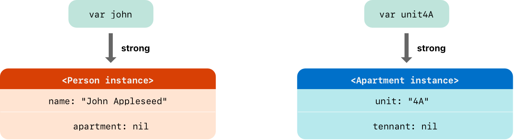
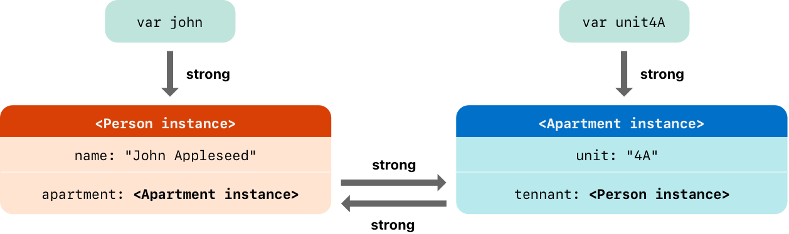
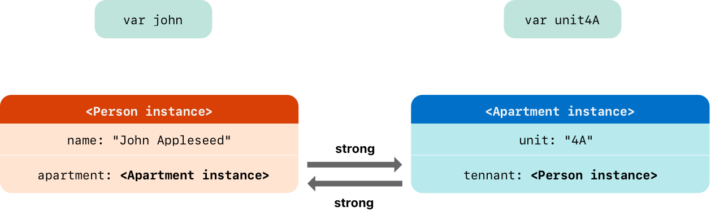
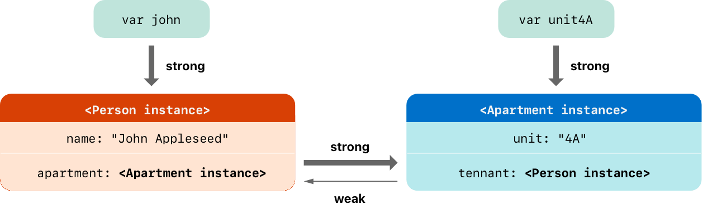
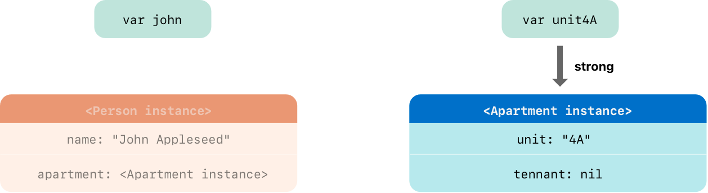
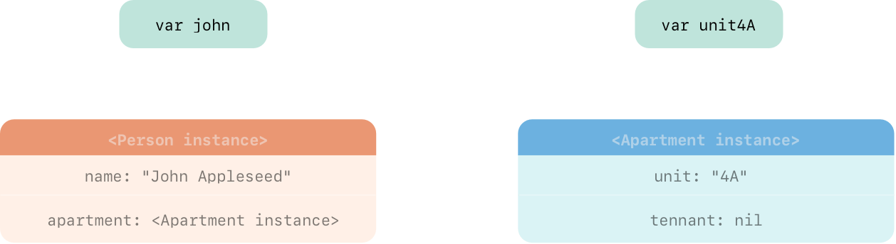
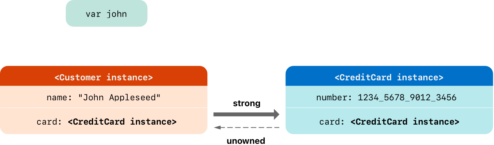
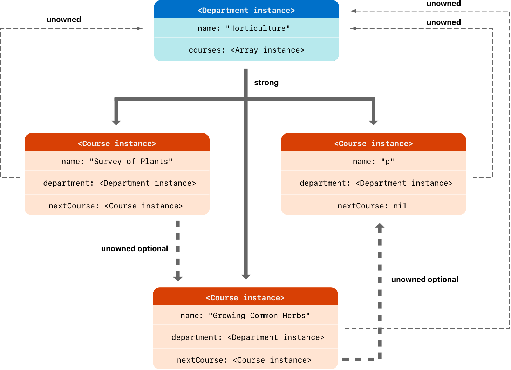
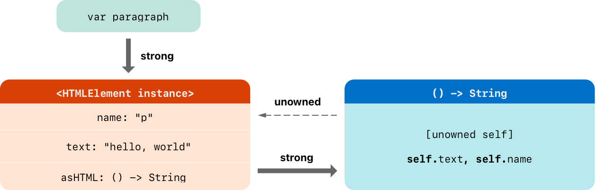

<!doctype html>
<html>
<head>
<meta charset='UTF-8'><meta name="viewport" content=" width=device-width, initial-scale=1.0, minimum-scale=1.0, maximum-scale=1.0, user-scalable=no"> 

<link href='https://fonts.loli.net/css?family=Open+Sans:400italic,700italic,700,400&subset=latin,latin-ext' rel='stylesheet' type='text/css' /><style type='text/css'>html {overflow-x: initial !important;}:root { --bg-color: #ffffff; --text-color: #333333; --select-text-bg-color: #B5D6FC; --select-text-font-color: auto; --monospace: "Lucida Console",Consolas,"Courier",monospace; --title-bar-height: 20px; }
.mac-os-11 { --title-bar-height: 28px; }
html { font-size: 14px; background-color: var(--bg-color); color: var(--text-color); font-family: "Helvetica Neue", Helvetica, Arial, sans-serif; -webkit-font-smoothing: antialiased; }
body { margin: 0px; padding: 0px; height: auto; inset: 0px; font-size: 1rem; line-height: 1.42857143; overflow-x: hidden; background-image: inherit; background-size: inherit; background-attachment: inherit; background-origin: inherit; background-clip: inherit; background-color: inherit; tab-size: 4; background-position: inherit; background-repeat: inherit; }
iframe { margin: auto; }
a.url { word-break: break-all; }
a:active, a:hover { outline: 0px; }
.in-text-selection, ::selection { text-shadow: none; background: var(--select-text-bg-color); color: var(--select-text-font-color); }
#write { margin: 0px auto; height: auto; width: inherit; word-break: normal; word-wrap: break-word; position: relative; white-space: normal; overflow-x: visible; padding-top: 36px; }
#write.first-line-indent p { text-indent: 2em; }
#write.first-line-indent li p, #write.first-line-indent p * { text-indent: 0px; }
#write.first-line-indent li { margin-left: 2em; }
.for-image #write { padding-left: 8px; padding-right: 8px; }
body.typora-export { padding-left: 30px; padding-right: 30px; }
.typora-export .footnote-line, .typora-export li, .typora-export p { white-space: pre-wrap; }
.typora-export .task-list-item input { pointer-events: none; }
@media screen and (max-width: 500px) {
  body.typora-export { padding-left: 0px; padding-right: 0px; }
  #write { padding-left: 20px; padding-right: 20px; }
}
#write li > figure:last-child { margin-bottom: 0.5rem; }
#write ol, #write ul { position: relative; }
img { max-width: 100%; vertical-align: middle; image-orientation: from-image; }
button, input, select, textarea { color: inherit; font-family: inherit; font-size: inherit; font-style: inherit; font-variant-caps: inherit; font-weight: inherit; font-stretch: inherit; line-height: inherit; }
input[type="checkbox"], input[type="radio"] { line-height: normal; padding: 0px; }
*, ::after, ::before { box-sizing: border-box; }
#write h1, #write h2, #write h3, #write h4, #write h5, #write h6, #write p, #write pre { width: inherit; }
#write h1, #write h2, #write h3, #write h4, #write h5, #write h6, #write p { position: relative; }
p { line-height: inherit; }
h1, h2, h3, h4, h5, h6 { break-after: avoid-page; break-inside: avoid; orphans: 4; }
p { orphans: 4; }
h1 { font-size: 2rem; }
h2 { font-size: 1.8rem; }
h3 { font-size: 1.6rem; }
h4 { font-size: 1.4rem; }
h5 { font-size: 1.2rem; }
h6 { font-size: 1rem; }
.md-math-block, .md-rawblock, h1, h2, h3, h4, h5, h6, p { margin-top: 1rem; margin-bottom: 1rem; }
.hidden { display: none; }
.md-blockmeta { color: rgb(204, 204, 204); font-weight: 700; font-style: italic; }
a { cursor: pointer; }
sup.md-footnote { padding: 2px 4px; background-color: rgba(238, 238, 238, 0.7); color: rgb(85, 85, 85); border-radius: 4px; cursor: pointer; }
sup.md-footnote a, sup.md-footnote a:hover { color: inherit; text-transform: inherit; text-decoration: inherit; }
#write input[type="checkbox"] { cursor: pointer; width: inherit; height: inherit; }
figure { overflow-x: auto; margin: 1.2em 0px; max-width: calc(100% + 16px); padding: 0px; }
figure > table { margin: 0px; }
thead, tr { break-inside: avoid; break-after: auto; }
thead { display: table-header-group; }
table { border-collapse: collapse; border-spacing: 0px; width: 100%; overflow: auto; break-inside: auto; text-align: left; }
table.md-table td { min-width: 32px; }
.CodeMirror-gutters { border-right-width: 0px; background-color: inherit; }
.CodeMirror-linenumber { }
.CodeMirror { text-align: left; }
.CodeMirror-placeholder { opacity: 0.3; }
.CodeMirror pre { padding: 0px 4px; }
.CodeMirror-lines { padding: 0px; }
div.hr:focus { cursor: none; }
#write pre { white-space: pre-wrap; }
#write.fences-no-line-wrapping pre { white-space: pre; }
#write pre.ty-contain-cm { white-space: normal; }
.CodeMirror-gutters { margin-right: 4px; }
.md-fences { font-size: 0.9rem; display: block; break-inside: avoid; text-align: left; overflow: visible; white-space: pre; background-image: inherit; background-size: inherit; background-attachment: inherit; background-origin: inherit; background-clip: inherit; background-color: inherit; position: relative !important; background-position: inherit; background-repeat: inherit; }
.md-fences-adv-panel { width: 100%; margin-top: 10px; text-align: center; padding-top: 0px; padding-bottom: 8px; overflow-x: auto; }
#write .md-fences.mock-cm { white-space: pre-wrap; }
.md-fences.md-fences-with-lineno { padding-left: 0px; }
#write.fences-no-line-wrapping .md-fences.mock-cm { white-space: pre; overflow-x: auto; }
.md-fences.mock-cm.md-fences-with-lineno { padding-left: 8px; }
.CodeMirror-line, twitterwidget { break-inside: avoid; }
svg { break-inside: avoid; }
.footnotes { opacity: 0.8; font-size: 0.9rem; margin-top: 1em; margin-bottom: 1em; }
.footnotes + .footnotes { margin-top: 0px; }
.md-reset { margin: 0px; padding: 0px; border: 0px; outline: 0px; vertical-align: top; text-decoration: none; text-shadow: none; float: none; position: static; width: auto; height: auto; white-space: nowrap; cursor: inherit; line-height: normal; font-weight: 400; text-align: left; box-sizing: content-box; direction: ltr; background-position: 0px 0px; }
li div { padding-top: 0px; }
blockquote { margin: 1rem 0px; }
li .mathjax-block, li p { margin: 0.5rem 0px; }
li blockquote { margin: 1rem 0px; }
li { margin: 0px; position: relative; }
blockquote > :last-child { margin-bottom: 0px; }
blockquote > :first-child, li > :first-child { margin-top: 0px; }
.footnotes-area { color: rgb(136, 136, 136); margin-top: 0.714rem; padding-bottom: 0.143rem; white-space: normal; }
#write .footnote-line { white-space: pre-wrap; }
@media print {
  body, html { border: 1px solid transparent; height: 99%; break-after: avoid; break-before: avoid; font-variant-ligatures: no-common-ligatures; }
  #write { margin-top: 0px; padding-top: 0px; border-color: transparent !important; padding-bottom: 0px !important; }
  .typora-export * { print-color-adjust: exact; }
  .typora-export #write { break-after: avoid; }
  .typora-export #write::after { height: 0px; }
  .is-mac table { break-inside: avoid; }
  .typora-export-show-outline .typora-export-sidebar { display: none; }
}
.footnote-line { margin-top: 0.714em; font-size: 0.7em; }
a img, img a { cursor: pointer; }
pre.md-meta-block { font-size: 0.8rem; min-height: 0.8rem; white-space: pre-wrap; background-color: rgb(204, 204, 204); display: block; overflow-x: hidden; }
p > .md-image:only-child:not(.md-img-error) img, p > img:only-child { display: block; margin: auto; }
#write.first-line-indent p > .md-image:only-child:not(.md-img-error) img { left: -2em; position: relative; }
p > .md-image:only-child { display: inline-block; width: 100%; }
#write .MathJax_Display { margin: 0.8em 0px 0px; }
.md-math-block { width: 100%; }
.md-math-block:not(:empty)::after { display: none; }
.MathJax_ref { fill: currentcolor; }
[contenteditable="true"]:active, [contenteditable="true"]:focus, [contenteditable="false"]:active, [contenteditable="false"]:focus { outline: 0px; box-shadow: none; }
.md-task-list-item { position: relative; list-style-type: none; }
.task-list-item.md-task-list-item { padding-left: 0px; }
.md-task-list-item > input { position: absolute; top: 0px; left: 0px; margin-left: -1.2em; margin-top: calc(1em - 10px); border: none; }
.math { font-size: 1rem; }
.md-toc { min-height: 3.58rem; position: relative; font-size: 0.9rem; border-radius: 10px; }
.md-toc-content { position: relative; margin-left: 0px; }
.md-toc-content::after, .md-toc::after { display: none; }
.md-toc-item { display: block; color: rgb(65, 131, 196); }
.md-toc-item a { text-decoration: none; }
.md-toc-inner:hover { text-decoration: underline; }
.md-toc-inner { display: inline-block; cursor: pointer; }
.md-toc-h1 .md-toc-inner { margin-left: 0px; font-weight: 700; }
.md-toc-h2 .md-toc-inner { margin-left: 2em; }
.md-toc-h3 .md-toc-inner { margin-left: 4em; }
.md-toc-h4 .md-toc-inner { margin-left: 6em; }
.md-toc-h5 .md-toc-inner { margin-left: 8em; }
.md-toc-h6 .md-toc-inner { margin-left: 10em; }
@media screen and (max-width: 48em) {
  .md-toc-h3 .md-toc-inner { margin-left: 3.5em; }
  .md-toc-h4 .md-toc-inner { margin-left: 5em; }
  .md-toc-h5 .md-toc-inner { margin-left: 6.5em; }
  .md-toc-h6 .md-toc-inner { margin-left: 8em; }
}
a.md-toc-inner { font-size: inherit; font-style: inherit; font-weight: inherit; line-height: inherit; }
.footnote-line a:not(.reversefootnote) { color: inherit; }
.reversefootnote { font-family: ui-monospace, sans-serif; }
.md-attr { display: none; }
.md-fn-count::after { content: "."; }
code, pre, samp, tt { font-family: var(--monospace); }
kbd { margin: 0px 0.1em; padding: 0.1em 0.6em; font-size: 0.8em; color: rgb(36, 39, 41); background-color: rgb(255, 255, 255); border: 1px solid rgb(173, 179, 185); border-radius: 3px; box-shadow: rgba(12, 13, 14, 0.2) 0px 1px 0px, rgb(255, 255, 255) 0px 0px 0px 2px inset; white-space: nowrap; vertical-align: middle; }
.md-comment { color: rgb(162, 127, 3); opacity: 0.6; font-family: var(--monospace); }
code { text-align: left; }
a.md-print-anchor { white-space: pre !important; border: none !important; display: inline-block !important; position: absolute !important; width: 1px !important; right: 0px !important; outline: 0px !important; text-shadow: initial !important; background-position: 0px 0px !important; }
.os-windows.monocolor-emoji .md-emoji { font-family: "Segoe UI Symbol", sans-serif; }
.md-diagram-panel > svg { max-width: 100%; }
[lang="flow"] svg, [lang="mermaid"] svg { max-width: 100%; height: auto; }
[lang="mermaid"] .node text { font-size: 1rem; }
table tr th { border-bottom-width: 0px; }
video { max-width: 100%; display: block; margin: 0px auto; }
iframe { max-width: 100%; width: 100%; border: none; }
.highlight td, .highlight tr { border: 0px; }
mark { background-color: rgb(255, 255, 0); color: rgb(0, 0, 0); }
.md-html-inline .md-plain, .md-html-inline strong, mark .md-inline-math, mark strong { color: inherit; }
.md-expand mark .md-meta { opacity: 0.3 !important; }
mark .md-meta { color: rgb(0, 0, 0); }
@media print {
  .typora-export h1, .typora-export h2, .typora-export h3, .typora-export h4, .typora-export h5, .typora-export h6 { break-inside: avoid; }
}
.md-diagram-panel .messageText { stroke: none !important; }
.md-diagram-panel .start-state { fill: var(--node-fill); }
.md-diagram-panel .edgeLabel rect { opacity: 1 !important; }
.md-fences.md-fences-math { font-size: 1em; }
.md-fences-advanced:not(.md-focus) { padding: 0px; white-space: nowrap; border: 0px; }
.md-fences-advanced:not(.md-focus) { background-image: inherit; background-size: inherit; background-attachment: inherit; background-origin: inherit; background-clip: inherit; background-color: inherit; background-position: inherit; background-repeat: inherit; }
.typora-export-show-outline .typora-export-content { max-width: 1440px; margin: auto; display: flex; flex-direction: row; }
.typora-export-sidebar { width: 300px; font-size: 0.8rem; margin-top: 80px; margin-right: 18px; }
.typora-export-show-outline #write { --webkit-flex: 2; flex: 2 1 0%; }
.typora-export-sidebar .outline-content { position: fixed; top: 0px; max-height: 100%; overflow: hidden auto; padding-bottom: 30px; padding-top: 60px; width: 300px; }
@media screen and (max-width: 1024px) {
  .typora-export-sidebar, .typora-export-sidebar .outline-content { width: 240px; }
}
@media screen and (max-width: 800px) {
  .typora-export-sidebar { display: none; }
}
.outline-content li, .outline-content ul { margin-left: 0px; margin-right: 0px; padding-left: 0px; padding-right: 0px; list-style: none; }
.outline-content ul { margin-top: 0px; margin-bottom: 0px; }
.outline-content strong { font-weight: 400; }
.outline-expander { width: 1rem; height: 1.428571429rem; position: relative; display: table-cell; vertical-align: middle; cursor: pointer; padding-left: 4px; }
.outline-expander::before { content: ""; position: relative; font-family: Ionicons; display: inline-block; font-size: 8px; vertical-align: middle; }
.outline-item { padding-top: 3px; padding-bottom: 3px; cursor: pointer; }
.outline-expander:hover::before { content: ""; }
.outline-h1 > .outline-item { padding-left: 0px; }
.outline-h2 > .outline-item { padding-left: 1em; }
.outline-h3 > .outline-item { padding-left: 2em; }
.outline-h4 > .outline-item { padding-left: 3em; }
.outline-h5 > .outline-item { padding-left: 4em; }
.outline-h6 > .outline-item { padding-left: 5em; }
.outline-label { cursor: pointer; display: table-cell; vertical-align: middle; text-decoration: none; color: inherit; }
.outline-label:hover { text-decoration: underline; }
.outline-item:hover { border-color: rgb(245, 245, 245); background-color: var(--item-hover-bg-color); }
.outline-item:hover { margin-left: -28px; margin-right: -28px; border-left-width: 28px; border-left-style: solid; border-left-color: transparent; border-right-width: 28px; border-right-style: solid; border-right-color: transparent; }
.outline-item-single .outline-expander::before, .outline-item-single .outline-expander:hover::before { display: none; }
.outline-item-open > .outline-item > .outline-expander::before { content: ""; }
.outline-children { display: none; }
.info-panel-tab-wrapper { display: none; }
.outline-item-open > .outline-children { display: block; }
.typora-export .outline-item { padding-top: 1px; padding-bottom: 1px; }
.typora-export .outline-item:hover { margin-right: -8px; border-right-width: 8px; border-right-style: solid; border-right-color: transparent; }
.typora-export .outline-expander::before { content: "+"; font-family: inherit; top: -1px; }
.typora-export .outline-expander:hover::before, .typora-export .outline-item-open > .outline-item > .outline-expander::before { content: "−"; }
.typora-export-collapse-outline .outline-children { display: none; }
.typora-export-collapse-outline .outline-item-open > .outline-children, .typora-export-no-collapse-outline .outline-children { display: block; }
.typora-export-no-collapse-outline .outline-expander::before { content: "" !important; }
.typora-export-show-outline .outline-item-active > .outline-item .outline-label { font-weight: 700; }
.md-inline-math-container mjx-container { zoom: 0.95; }


.CodeMirror { height: auto; }
.CodeMirror.cm-s-inner { background-image: inherit; background-size: inherit; background-attachment: inherit; background-origin: inherit; background-clip: inherit; background-color: inherit; background-position: inherit; background-repeat: inherit; }
.CodeMirror-scroll { overflow: auto hidden; z-index: 3; }
.CodeMirror-gutter-filler, .CodeMirror-scrollbar-filler { background-color: rgb(255, 255, 255); }
.CodeMirror-gutters { border-right-width: 1px; border-right-style: solid; border-right-color: rgb(221, 221, 221); background-image: inherit; background-size: inherit; background-attachment: inherit; background-origin: inherit; background-clip: inherit; background-color: inherit; white-space: nowrap; background-position: inherit; background-repeat: inherit; }
.CodeMirror-linenumber { padding: 0px 3px 0px 5px; text-align: right; color: rgb(153, 153, 153); }
.cm-s-inner .cm-keyword { color: rgb(119, 0, 136); }
.cm-s-inner .cm-atom, .cm-s-inner.cm-atom { color: rgb(34, 17, 153); }
.cm-s-inner .cm-number { color: rgb(17, 102, 68); }
.cm-s-inner .cm-def { color: rgb(0, 0, 255); }
.cm-s-inner .cm-variable { color: rgb(0, 0, 0); }
.cm-s-inner .cm-variable-2 { color: rgb(0, 85, 170); }
.cm-s-inner .cm-variable-3 { color: rgb(0, 136, 85); }
.cm-s-inner .cm-string { color: rgb(170, 17, 17); }
.cm-s-inner .cm-property { color: rgb(0, 0, 0); }
.cm-s-inner .cm-operator { color: rgb(152, 26, 26); }
.cm-s-inner .cm-comment, .cm-s-inner.cm-comment { color: rgb(170, 85, 0); }
.cm-s-inner .cm-string-2 { color: rgb(255, 85, 0); }
.cm-s-inner .cm-meta { color: rgb(85, 85, 85); }
.cm-s-inner .cm-qualifier { color: rgb(85, 85, 85); }
.cm-s-inner .cm-builtin { color: rgb(51, 0, 170); }
.cm-s-inner .cm-bracket { color: rgb(153, 153, 119); }
.cm-s-inner .cm-tag { color: rgb(17, 119, 0); }
.cm-s-inner .cm-attribute { color: rgb(0, 0, 204); }
.cm-s-inner .cm-header, .cm-s-inner.cm-header { color: rgb(0, 0, 255); }
.cm-s-inner .cm-quote, .cm-s-inner.cm-quote { color: rgb(0, 153, 0); }
.cm-s-inner .cm-hr, .cm-s-inner.cm-hr { color: rgb(153, 153, 153); }
.cm-s-inner .cm-link, .cm-s-inner.cm-link { color: rgb(0, 0, 204); }
.cm-negative { color: rgb(221, 68, 68); }
.cm-positive { color: rgb(34, 153, 34); }
.cm-header, .cm-strong { font-weight: 700; }
.cm-del { text-decoration: line-through; }
.cm-em { font-style: italic; }
.cm-link { text-decoration: underline; }
.cm-error { color: red; }
.cm-invalidchar { color: red; }
.cm-constant { color: rgb(38, 139, 210); }
.cm-defined { color: rgb(181, 137, 0); }
div.CodeMirror span.CodeMirror-matchingbracket { color: rgb(0, 255, 0); }
div.CodeMirror span.CodeMirror-nonmatchingbracket { color: rgb(255, 34, 34); }
.cm-s-inner .CodeMirror-activeline-background { background-image: inherit; background-size: inherit; background-attachment: inherit; background-origin: inherit; background-clip: inherit; background-color: inherit; background-position: inherit; background-repeat: inherit; }
.CodeMirror { position: relative; overflow: hidden; }
.CodeMirror-scroll { height: 100%; outline: 0px; position: relative; box-sizing: content-box; background-image: inherit; background-size: inherit; background-attachment: inherit; background-origin: inherit; background-clip: inherit; background-color: inherit; background-position: inherit; background-repeat: inherit; }
.CodeMirror-sizer { position: relative; }
.CodeMirror-gutter-filler, .CodeMirror-hscrollbar, .CodeMirror-scrollbar-filler, .CodeMirror-vscrollbar { position: absolute; z-index: 6; display: none; outline: 0px; }
.CodeMirror-vscrollbar { right: 0px; top: 0px; overflow: hidden; }
.CodeMirror-hscrollbar { bottom: 0px; left: 0px; overflow: auto hidden; }
.CodeMirror-scrollbar-filler { right: 0px; bottom: 0px; }
.CodeMirror-gutter-filler { left: 0px; bottom: 0px; }
.CodeMirror-gutters { position: absolute; left: 0px; top: 0px; padding-bottom: 10px; z-index: 3; overflow-y: hidden; }
.CodeMirror-gutter { white-space: normal; height: 100%; box-sizing: content-box; padding-bottom: 30px; margin-bottom: -32px; display: inline-block; }
.CodeMirror-gutter-wrapper { position: absolute; z-index: 4; border: none !important; background-position: 0px 0px !important; }
.CodeMirror-gutter-background { position: absolute; top: 0px; bottom: 0px; z-index: 4; }
.CodeMirror-gutter-elt { position: absolute; cursor: default; z-index: 4; }
.CodeMirror-lines { cursor: text; }
.CodeMirror pre { border-radius: 0px; border-width: 0px; font-family: inherit; font-size: inherit; margin: 0px; white-space: pre; word-wrap: normal; color: inherit; z-index: 2; position: relative; overflow: visible; background-position: 0px 0px; }
.CodeMirror-wrap pre { word-wrap: break-word; white-space: pre-wrap; word-break: normal; }
.CodeMirror-code pre { border-right-width: 30px; border-right-style: solid; border-right-color: transparent; width: fit-content; }
.CodeMirror-wrap .CodeMirror-code pre { border-right-style: none; width: auto; }
.CodeMirror-linebackground { position: absolute; inset: 0px; z-index: 0; }
.CodeMirror-linewidget { position: relative; z-index: 2; overflow: auto; }
.CodeMirror-wrap .CodeMirror-scroll { overflow-x: hidden; }
.CodeMirror-measure { position: absolute; width: 100%; height: 0px; overflow: hidden; visibility: hidden; }
.CodeMirror-measure pre { position: static; }
.CodeMirror div.CodeMirror-cursor { position: absolute; visibility: hidden; border-right-style: none; width: 0px; }
.CodeMirror div.CodeMirror-cursor { visibility: hidden; }
.CodeMirror-focused div.CodeMirror-cursor { visibility: inherit; }
.cm-searching { background-color: rgba(255, 255, 0, 0.4); }
span.cm-underlined { text-decoration: underline; }
span.cm-strikethrough { text-decoration: line-through; }
.cm-tw-syntaxerror { color: rgb(255, 255, 255); background-color: rgb(153, 0, 0); }
.cm-tw-deleted { text-decoration: line-through; }
.cm-tw-header5 { font-weight: 700; }
.cm-tw-listitem:first-child { padding-left: 10px; }
.cm-tw-box { border-style: solid; border-right-width: 1px; border-bottom-width: 1px; border-left-width: 1px; border-color: inherit; border-top-width: 0px !important; }
.cm-tw-underline { text-decoration: underline; }
@media print {
  .CodeMirror div.CodeMirror-cursor { visibility: hidden; }
}


:root {
    --side-bar-bg-color: #fafafa;
    --control-text-color: #777;
}

@include-when-export url(https://fonts.loli.net/css?family=Open+Sans:400italic,700italic,700,400&subset=latin,latin-ext);

/* open-sans-regular - latin-ext_latin */
  /* open-sans-italic - latin-ext_latin */
    /* open-sans-700 - latin-ext_latin */
    /* open-sans-700italic - latin-ext_latin */
  html {
    font-size: 16px;
    -webkit-font-smoothing: antialiased;
}

body {
    font-family: "Open Sans","Clear Sans", "Helvetica Neue", Helvetica, Arial, 'Segoe UI Emoji', sans-serif;
    color: rgb(51, 51, 51);
    line-height: 1.6;
}

#write {
    max-width: 860px;
  	margin: 0 auto;
  	padding: 30px;
    padding-bottom: 100px;
}

@media only screen and (min-width: 1400px) {
	#write {
		max-width: 1024px;
	}
}

@media only screen and (min-width: 1800px) {
	#write {
		max-width: 1200px;
	}
}

#write > ul:first-child,
#write > ol:first-child{
    margin-top: 30px;
}

a {
    color: #4183C4;
}
h1,
h2,
h3,
h4,
h5,
h6 {
    position: relative;
    margin-top: 1rem;
    margin-bottom: 1rem;
    font-weight: bold;
    line-height: 1.4;
    cursor: text;
}
h1:hover a.anchor,
h2:hover a.anchor,
h3:hover a.anchor,
h4:hover a.anchor,
h5:hover a.anchor,
h6:hover a.anchor {
    text-decoration: none;
}
h1 tt,
h1 code {
    font-size: inherit;
}
h2 tt,
h2 code {
    font-size: inherit;
}
h3 tt,
h3 code {
    font-size: inherit;
}
h4 tt,
h4 code {
    font-size: inherit;
}
h5 tt,
h5 code {
    font-size: inherit;
}
h6 tt,
h6 code {
    font-size: inherit;
}
h1 {
    font-size: 2.25em;
    line-height: 1.2;
    border-bottom: 1px solid #eee;
}
h2 {
    font-size: 1.75em;
    line-height: 1.225;
    border-bottom: 1px solid #eee;
}

/*@media print {
    .typora-export h1,
    .typora-export h2 {
        border-bottom: none;
        padding-bottom: initial;
    }

    .typora-export h1::after,
    .typora-export h2::after {
        content: "";
        display: block;
        height: 100px;
        margin-top: -96px;
        border-top: 1px solid #eee;
    }
}*/

h3 {
    font-size: 1.5em;
    line-height: 1.43;
}
h4 {
    font-size: 1.25em;
}
h5 {
    font-size: 1em;
}
h6 {
   font-size: 1em;
    color: #777;
}
p,
blockquote,
ul,
ol,
dl,
table{
    margin: 0.8em 0;
}
li>ol,
li>ul {
    margin: 0 0;
}
hr {
    height: 2px;
    padding: 0;
    margin: 16px 0;
    background-color: #e7e7e7;
    border: 0 none;
    overflow: hidden;
    box-sizing: content-box;
}

li p.first {
    display: inline-block;
}
ul,
ol {
    padding-left: 30px;
}
ul:first-child,
ol:first-child {
    margin-top: 0;
}
ul:last-child,
ol:last-child {
    margin-bottom: 0;
}
blockquote {
    border-left: 4px solid #dfe2e5;
    padding: 0 15px;
    color: #777777;
}
blockquote blockquote {
    padding-right: 0;
}
table {
    padding: 0;
    word-break: initial;
}
table tr {
    border: 1px solid #dfe2e5;
    margin: 0;
    padding: 0;
}
table tr:nth-child(2n),
thead {
    background-color: #f8f8f8;
}
table th {
    font-weight: bold;
    border: 1px solid #dfe2e5;
    border-bottom: 0;
    margin: 0;
    padding: 6px 13px;
}
table td {
    border: 1px solid #dfe2e5;
    margin: 0;
    padding: 6px 13px;
}
table th:first-child,
table td:first-child {
    margin-top: 0;
}
table th:last-child,
table td:last-child {
    margin-bottom: 0;
}

.CodeMirror-lines {
    padding-left: 4px;
}

.code-tooltip {
    box-shadow: 0 1px 1px 0 rgba(0,28,36,.3);
    border-top: 1px solid #eef2f2;
}

.md-fences,
code,
tt {
    border: 1px solid #e7eaed;
    background-color: #f8f8f8;
    border-radius: 3px;
    padding: 0;
    padding: 2px 4px 0px 4px;
    font-size: 0.9em;
}

code {
    background-color: #f3f4f4;
    padding: 0 2px 0 2px;
}

.md-fences {
    margin-bottom: 15px;
    margin-top: 15px;
    padding-top: 8px;
    padding-bottom: 6px;
}


.md-task-list-item > input {
  margin-left: -1.3em;
}

@media print {
    html {
        font-size: 13px;
    }
    pre {
        page-break-inside: avoid;
        word-wrap: break-word;
    }
}

.md-fences {
	background-color: #f8f8f8;
}
#write pre.md-meta-block {
	padding: 1rem;
    font-size: 85%;
    line-height: 1.45;
    background-color: #f7f7f7;
    border: 0;
    border-radius: 3px;
    color: #777777;
    margin-top: 0 !important;
}

.mathjax-block>.code-tooltip {
	bottom: .375rem;
}

.md-mathjax-midline {
    background: #fafafa;
}

#write>h3.md-focus:before{
	left: -1.5625rem;
	top: .375rem;
}
#write>h4.md-focus:before{
	left: -1.5625rem;
	top: .285714286rem;
}
#write>h5.md-focus:before{
	left: -1.5625rem;
	top: .285714286rem;
}
#write>h6.md-focus:before{
	left: -1.5625rem;
	top: .285714286rem;
}
.md-image>.md-meta {
    /*border: 1px solid #ddd;*/
    border-radius: 3px;
    padding: 2px 0px 0px 4px;
    font-size: 0.9em;
    color: inherit;
}

.md-tag {
    color: #a7a7a7;
    opacity: 1;
}

.md-toc { 
    margin-top:20px;
    padding-bottom:20px;
}

.sidebar-tabs {
    border-bottom: none;
}

#typora-quick-open {
    border: 1px solid #ddd;
    background-color: #f8f8f8;
}

#typora-quick-open-item {
    background-color: #FAFAFA;
    border-color: #FEFEFE #e5e5e5 #e5e5e5 #eee;
    border-style: solid;
    border-width: 1px;
}

/** focus mode */
.on-focus-mode blockquote {
    border-left-color: rgba(85, 85, 85, 0.12);
}

header, .context-menu, .megamenu-content, footer{
    font-family: "Segoe UI", "Arial", sans-serif;
}

.file-node-content:hover .file-node-icon,
.file-node-content:hover .file-node-open-state{
    visibility: visible;
}

.mac-seamless-mode #typora-sidebar {
    background-color: #fafafa;
    background-color: var(--side-bar-bg-color);
}

.md-lang {
    color: #b4654d;
}

/*.html-for-mac {
    --item-hover-bg-color: #E6F0FE;
}*/

#md-notification .btn {
    border: 0;
}

.dropdown-menu .divider {
    border-color: #e5e5e5;
    opacity: 0.4;
}

.ty-preferences .window-content {
    background-color: #fafafa;
}

.ty-preferences .nav-group-item.active {
    color: white;
    background: #999;
}

.menu-item-container a.menu-style-btn {
    background-color: #f5f8fa;
    background-image: linear-gradient( 180deg , hsla(0, 0%, 100%, 0.8), hsla(0, 0%, 100%, 0)); 
}


 @media print { @page {margin: 0 0 0 0;} body.typora-export {padding-left: 0; padding-right: 0;} #write {padding:0;}}
</style><title>Automatic_Reference_Counting</title>
</head>
<body class='typora-export'><div class='typora-export-content'>
<div id='write'><p><span>Swift 使用</span><em><span>自动引用计数（ARC）</span></em><span>机制来跟踪和管理你的应用程序的内存。通常情况下，Swift 内存管理机制会一直起作用，你无须自己来考虑内存的管理。ARC 会在类的实例不再被使用时，自动释放其占用的内存。</span></p><p><span>然而在少数情况下，为了能帮助你管理内存，ARC 需要更多的，代码之间关系的信息。本章描述了这些情况，并且为你示范怎样才能使 ARC 来管理你的应用程序的所有内存。在 Swift 使用 ARC 与在 Obejctive-C 中使用 ARC 非常类似，具体请参考 </span><a href='https://developer.apple.com/library/content/releasenotes/ObjectiveC/RN-TransitioningToARC/Introduction/Introduction.html#//apple-ref/doc/uid/TP40011226'><span>过渡到 ARC 的发布说明</span></a><span>。</span></p><blockquote><p><span>注意</span></p><p><span>引用计数仅仅应用于类的实例。结构体和枚举类型是值类型，不是引用类型，也不是通过引用的方式存储和传递。</span></p></blockquote><h2 id='自动引用计数的工作机制'><span>自动引用计数的工作机制 </span></h2><p><span>每当你创建一个新的类实例时，ARC 会分配一块内存来储存该实例的信息。内存中会包含实例的类型信息，以及这个实例所关联的任何存储属性的值。</span></p><p><span>此外，当实例不再被使用时，ARC 释放实例所占用的内存，并让释放的内存能挪作他用。这确保了不再被使用的实例，不会一直占用内存空间。</span></p><p><span>然而，当 ARC 回收并释放了正在被使用中的实例后，该实例的属性和方法将不能再被访问和调用。实际上，如果你试图访问这个实例，你的应用程序很可能会崩溃。</span></p><p><span>为了确保使用中的实例不会被销毁，ARC 会跟踪和计算每一个实例正在被多少属性，常量和变量所引用。哪怕实例的引用数为 1，ARC 都不会销毁这个实例。</span></p><p><span>为了使上述成为可能，无论你将实例赋值给属性、常量或变量，它们都会创建此实例的强引用。之所以称之为“强”引用，是因为它会将实例牢牢地保持住，只要强引用还在，实例是不允许被销毁的。</span></p><h2 id='自动引用计数实践'><span>自动引用计数实践 </span></h2><p><span>下面的例子展示了自动引用计数的工作机制。例子以一个简单的 </span><code>Person</code><span> 类开始，并定义了一个叫 </span><code>name</code><span> 的常量属性：</span></p><pre class="md-fences md-end-block ty-contain-cm modeLoaded" spellcheck="false" lang="swift"><div class="CodeMirror cm-s-inner cm-s-null-scroll CodeMirror-wrap" lang="swift"><div style="overflow: hidden; position: relative; width: 3px; height: 0px; top: 9px; left: 8px;"><textarea autocorrect="off" autocapitalize="off" spellcheck="false" tabindex="0" style="position: absolute; bottom: -1em; padding: 0px; width: 1000px; height: 1em; outline: none;"></textarea></div><div class="CodeMirror-scrollbar-filler" cm-not-content="true"></div><div class="CodeMirror-gutter-filler" cm-not-content="true"></div><div class="CodeMirror-scroll" tabindex="-1"><div class="CodeMirror-sizer" style="margin-left: 0px; margin-bottom: 0px; border-right-width: 0px; padding-right: 0px; padding-bottom: 0px;"><div style="position: relative; top: 0px;"><div class="CodeMirror-lines" role="presentation"><div role="presentation" style="position: relative; outline: none;"><div class="CodeMirror-measure"></div><div class="CodeMirror-measure"></div><div style="position: relative; z-index: 1;"></div><div class="CodeMirror-code" role="presentation" style=""><div class="CodeMirror-activeline" style="position: relative;"><div class="CodeMirror-activeline-background CodeMirror-linebackground"></div><div class="CodeMirror-gutter-background CodeMirror-activeline-gutter" style="left: 0px; width: 0px;"></div><pre class="CodeMirror-line" role="presentation"><span role="presentation" style="padding-right: 0.1px;"><span class="cm-keyword">class</span> <span class="cm-def">Person</span> <span class="cm-punctuation">{</span></span></pre></div><pre class="CodeMirror-line" role="presentation"><span role="presentation" style="padding-right: 0.1px;"> &nbsp; &nbsp;<span class="cm-keyword">let</span> <span class="cm-def">name</span><span class="cm-punctuation">:</span> <span class="cm-variable-2">String</span></span></pre><pre class="CodeMirror-line" role="presentation"><span role="presentation" style="padding-right: 0.1px;"> &nbsp; &nbsp;<span class="cm-keyword">init</span><span class="cm-punctuation">(</span><span class="cm-variable">name</span><span class="cm-punctuation">:</span> <span class="cm-variable-2">String</span><span class="cm-punctuation">)</span> <span class="cm-punctuation">{</span></span></pre><pre class="CodeMirror-line" role="presentation"><span role="presentation" style="padding-right: 0.1px;"> &nbsp; &nbsp; &nbsp; &nbsp;<span class="cm-atom">self</span><span class="cm-property">.name</span> <span class="cm-operator">=</span> <span class="cm-variable">name</span></span></pre><pre class="CodeMirror-line" role="presentation"><span role="presentation" style="padding-right: 0.1px;"> &nbsp; &nbsp; &nbsp; &nbsp;<span class="cm-variable">print</span><span class="cm-punctuation">(</span><span class="cm-string">"\(</span><span class="cm-variable">name</span><span class="cm-string">) is being initialized"</span><span class="cm-punctuation">)</span></span></pre><pre class="CodeMirror-line" role="presentation"><span role="presentation" style="padding-right: 0.1px;"> &nbsp; &nbsp;<span class="cm-punctuation">}</span></span></pre><pre class="CodeMirror-line" role="presentation"><span role="presentation" style="padding-right: 0.1px;"> &nbsp; &nbsp;<span class="cm-keyword">deinit</span> <span class="cm-punctuation">{</span></span></pre><pre class="CodeMirror-line" role="presentation"><span role="presentation" style="padding-right: 0.1px;"> &nbsp; &nbsp; &nbsp; &nbsp;<span class="cm-variable">print</span><span class="cm-punctuation">(</span><span class="cm-string">"\(</span><span class="cm-variable">name</span><span class="cm-string">) is being deinitialized"</span><span class="cm-punctuation">)</span></span></pre><pre class="CodeMirror-line" role="presentation"><span role="presentation" style="padding-right: 0.1px;"> &nbsp; &nbsp;<span class="cm-punctuation">}</span></span></pre><pre class="CodeMirror-line" role="presentation"><span role="presentation" style="padding-right: 0.1px;"><span class="cm-punctuation">}</span></span></pre></div></div></div></div></div><div style="position: absolute; height: 0px; width: 1px; border-bottom-width: 0px; border-bottom-style: solid; border-bottom-color: transparent; top: 220px;"></div><div class="CodeMirror-gutters" style="display: none; height: 220px;"></div></div></div></pre><p><code>Person</code><span> 类有一个构造器，此构造器给实例的 </span><code>name</code><span> 属性赋值，并打印一条消息以表明初始化过程生效。</span><code>Person</code><span> 类也拥有一个析构器，这个析构器会在实例被销毁时打印一条消息。</span></p><p><span>接下来的代码片段定义了三个类型为 </span><code>Person?</code><span> 的变量，按照代码片段中的顺序，为新的 </span><code>Person</code><span> 实例建立多个引用。由于这些变量是被定义为可选类型（</span><code>Person?</code><span>，而不是 </span><code>Person</code><span>），它们的值会被自动初始化为 </span><code>nil</code><span>，目前还不会引用到 </span><code>Person</code><span> 类的实例。</span></p><pre class="md-fences md-end-block ty-contain-cm modeLoaded" spellcheck="false" lang="swift"><div class="CodeMirror cm-s-inner cm-s-null-scroll CodeMirror-wrap" lang="swift"><div style="overflow: hidden; position: relative; width: 3px; height: 0px; top: 9px; left: 8px;"><textarea autocorrect="off" autocapitalize="off" spellcheck="false" tabindex="0" style="position: absolute; bottom: -1em; padding: 0px; width: 1000px; height: 1em; outline: none;"></textarea></div><div class="CodeMirror-scrollbar-filler" cm-not-content="true"></div><div class="CodeMirror-gutter-filler" cm-not-content="true"></div><div class="CodeMirror-scroll" tabindex="-1"><div class="CodeMirror-sizer" style="margin-left: 0px; margin-bottom: 0px; border-right-width: 0px; padding-right: 0px; padding-bottom: 0px;"><div style="position: relative; top: 0px;"><div class="CodeMirror-lines" role="presentation"><div role="presentation" style="position: relative; outline: none;"><div class="CodeMirror-measure"><pre><span>xxxxxxxxxx</span></pre></div><div class="CodeMirror-measure"></div><div style="position: relative; z-index: 1;"></div><div class="CodeMirror-code" role="presentation"><div class="CodeMirror-activeline" style="position: relative;"><div class="CodeMirror-activeline-background CodeMirror-linebackground"></div><div class="CodeMirror-gutter-background CodeMirror-activeline-gutter" style="left: 0px; width: 0px;"></div><pre class="CodeMirror-line" role="presentation"><span role="presentation" style="padding-right: 0.1px;"><span class="cm-keyword">var</span> <span class="cm-def">reference1</span><span class="cm-punctuation">:</span> <span class="cm-variable">Person</span><span class="cm-operator">?</span></span></pre></div><pre class="CodeMirror-line" role="presentation"><span role="presentation" style="padding-right: 0.1px;"><span class="cm-keyword">var</span> <span class="cm-def">reference2</span><span class="cm-punctuation">:</span> <span class="cm-variable">Person</span><span class="cm-operator">?</span></span></pre><pre class="CodeMirror-line" role="presentation"><span role="presentation" style="padding-right: 0.1px;"><span class="cm-keyword">var</span> <span class="cm-def">reference3</span><span class="cm-punctuation">:</span> <span class="cm-variable">Person</span><span class="cm-operator">?</span></span></pre></div></div></div></div></div><div style="position: absolute; height: 0px; width: 1px; border-bottom-width: 0px; border-bottom-style: solid; border-bottom-color: transparent; top: 66px;"></div><div class="CodeMirror-gutters" style="display: none; height: 66px;"></div></div></div></pre><p><span>现在你可以创建 </span><code>Person</code><span> 类的新实例，并且将它赋值给三个变量中的一个：</span></p><pre class="md-fences md-end-block ty-contain-cm modeLoaded" spellcheck="false" lang="swift"><div class="CodeMirror cm-s-inner cm-s-null-scroll CodeMirror-wrap" lang="swift"><div style="overflow: hidden; position: relative; width: 3px; height: 0px; top: 9px; left: 8px;"><textarea autocorrect="off" autocapitalize="off" spellcheck="false" tabindex="0" style="position: absolute; bottom: -1em; padding: 0px; width: 1000px; height: 1em; outline: none;"></textarea></div><div class="CodeMirror-scrollbar-filler" cm-not-content="true"></div><div class="CodeMirror-gutter-filler" cm-not-content="true"></div><div class="CodeMirror-scroll" tabindex="-1"><div class="CodeMirror-sizer" style="margin-left: 0px; margin-bottom: 0px; border-right-width: 0px; padding-right: 0px; padding-bottom: 0px;"><div style="position: relative; top: 0px;"><div class="CodeMirror-lines" role="presentation"><div role="presentation" style="position: relative; outline: none;"><div class="CodeMirror-measure"><pre><span>xxxxxxxxxx</span></pre></div><div class="CodeMirror-measure"></div><div style="position: relative; z-index: 1;"></div><div class="CodeMirror-code" role="presentation"><div class="CodeMirror-activeline" style="position: relative;"><div class="CodeMirror-activeline-background CodeMirror-linebackground"></div><div class="CodeMirror-gutter-background CodeMirror-activeline-gutter" style="left: 0px; width: 0px;"></div><pre class="CodeMirror-line" role="presentation"><span role="presentation" style="padding-right: 0.1px;"><span class="cm-variable">reference1</span> <span class="cm-operator">=</span> <span class="cm-variable">Person</span><span class="cm-punctuation">(</span><span class="cm-variable">name</span><span class="cm-punctuation">:</span> <span class="cm-string">"John Appleseed"</span><span class="cm-punctuation">)</span></span></pre></div><pre class="CodeMirror-line" role="presentation"><span role="presentation" style="padding-right: 0.1px;"><span class="cm-comment">// 打印“John Appleseed is being initialized”</span></span></pre></div></div></div></div></div><div style="position: absolute; height: 0px; width: 1px; border-bottom-width: 0px; border-bottom-style: solid; border-bottom-color: transparent; top: 44px;"></div><div class="CodeMirror-gutters" style="display: none; height: 44px;"></div></div></div></pre><p><span>应当注意到当你调用 </span><code>Person</code><span> 类的构造器的时候，</span><code>&quot;John Appleseed is being initialized&quot;</code><span> 会被打印出来。由此可以确定构造器被执行。</span></p><p><span>由于 </span><code>Person</code><span> 类的新实例被赋值给了 </span><code>reference1</code><span> 变量，所以 </span><code>reference1</code><span> 到 </span><code>Person</code><span> 类的新实例之间建立了一个强引用。正是因为这一个强引用，ARC 会保证 </span><code>Person</code><span> 实例被保持在内存中不被销毁。</span></p><p><span>如果你将同一个 </span><code>Person</code><span> 实例也赋值给其他两个变量，该实例又会多出两个强引用：</span></p><pre class="md-fences md-end-block ty-contain-cm modeLoaded" spellcheck="false" lang="swift"><div class="CodeMirror cm-s-inner cm-s-null-scroll CodeMirror-wrap" lang="swift"><div style="overflow: hidden; position: relative; width: 3px; height: 0px; top: 9px; left: 8px;"><textarea autocorrect="off" autocapitalize="off" spellcheck="false" tabindex="0" style="position: absolute; bottom: -1em; padding: 0px; width: 1000px; height: 1em; outline: none;"></textarea></div><div class="CodeMirror-scrollbar-filler" cm-not-content="true"></div><div class="CodeMirror-gutter-filler" cm-not-content="true"></div><div class="CodeMirror-scroll" tabindex="-1"><div class="CodeMirror-sizer" style="margin-left: 0px; margin-bottom: 0px; border-right-width: 0px; padding-right: 0px; padding-bottom: 0px;"><div style="position: relative; top: 0px;"><div class="CodeMirror-lines" role="presentation"><div role="presentation" style="position: relative; outline: none;"><div class="CodeMirror-measure"><pre><span>xxxxxxxxxx</span></pre></div><div class="CodeMirror-measure"></div><div style="position: relative; z-index: 1;"></div><div class="CodeMirror-code" role="presentation"><div class="CodeMirror-activeline" style="position: relative;"><div class="CodeMirror-activeline-background CodeMirror-linebackground"></div><div class="CodeMirror-gutter-background CodeMirror-activeline-gutter" style="left: 0px; width: 0px;"></div><pre class="CodeMirror-line" role="presentation"><span role="presentation" style="padding-right: 0.1px;"><span class="cm-variable">reference2</span> <span class="cm-operator">=</span> <span class="cm-variable">reference1</span></span></pre></div><pre class="CodeMirror-line" role="presentation"><span role="presentation" style="padding-right: 0.1px;"><span class="cm-variable">reference3</span> <span class="cm-operator">=</span> <span class="cm-variable">reference1</span></span></pre></div></div></div></div></div><div style="position: absolute; height: 0px; width: 1px; border-bottom-width: 0px; border-bottom-style: solid; border-bottom-color: transparent; top: 44px;"></div><div class="CodeMirror-gutters" style="display: none; height: 44px;"></div></div></div></pre><p><span>现在这一个 </span><code>Person</code><span> 实例已经有三个强引用了。</span></p><p><span>如果你通过给其中两个变量赋值 </span><code>nil</code><span> 的方式断开两个强引用（包括最先的那个强引用），只留下一个强引用，</span><code>Person</code><span> 实例不会被销毁：</span></p><pre class="md-fences md-end-block ty-contain-cm modeLoaded" spellcheck="false" lang="swift"><div class="CodeMirror cm-s-inner cm-s-null-scroll CodeMirror-wrap" lang="swift"><div style="overflow: hidden; position: relative; width: 3px; height: 0px; top: 9px; left: 8px;"><textarea autocorrect="off" autocapitalize="off" spellcheck="false" tabindex="0" style="position: absolute; bottom: -1em; padding: 0px; width: 1000px; height: 1em; outline: none;"></textarea></div><div class="CodeMirror-scrollbar-filler" cm-not-content="true"></div><div class="CodeMirror-gutter-filler" cm-not-content="true"></div><div class="CodeMirror-scroll" tabindex="-1"><div class="CodeMirror-sizer" style="margin-left: 0px; margin-bottom: 0px; border-right-width: 0px; padding-right: 0px; padding-bottom: 0px;"><div style="position: relative; top: 0px;"><div class="CodeMirror-lines" role="presentation"><div role="presentation" style="position: relative; outline: none;"><div class="CodeMirror-measure"><pre><span>xxxxxxxxxx</span></pre></div><div class="CodeMirror-measure"></div><div style="position: relative; z-index: 1;"></div><div class="CodeMirror-code" role="presentation"><div class="CodeMirror-activeline" style="position: relative;"><div class="CodeMirror-activeline-background CodeMirror-linebackground"></div><div class="CodeMirror-gutter-background CodeMirror-activeline-gutter" style="left: 0px; width: 0px;"></div><pre class="CodeMirror-line" role="presentation"><span role="presentation" style="padding-right: 0.1px;"><span class="cm-variable">reference1</span> <span class="cm-operator">=</span> <span class="cm-atom">nil</span></span></pre></div><pre class="CodeMirror-line" role="presentation"><span role="presentation" style="padding-right: 0.1px;"><span class="cm-variable">reference2</span> <span class="cm-operator">=</span> <span class="cm-atom">nil</span></span></pre></div></div></div></div></div><div style="position: absolute; height: 0px; width: 1px; border-bottom-width: 0px; border-bottom-style: solid; border-bottom-color: transparent; top: 44px;"></div><div class="CodeMirror-gutters" style="display: none; height: 44px;"></div></div></div></pre><p><span>在你清楚地表明不再使用这个 </span><code>Person</code><span> 实例时，即第三个也就是最后一个强引用被断开时，ARC 会销毁它：</span></p><pre class="md-fences md-end-block ty-contain-cm modeLoaded" spellcheck="false" lang="swift"><div class="CodeMirror cm-s-inner cm-s-null-scroll CodeMirror-wrap" lang="swift"><div style="overflow: hidden; position: relative; width: 3px; height: 0px; top: 9px; left: 8px;"><textarea autocorrect="off" autocapitalize="off" spellcheck="false" tabindex="0" style="position: absolute; bottom: -1em; padding: 0px; width: 1000px; height: 1em; outline: none;"></textarea></div><div class="CodeMirror-scrollbar-filler" cm-not-content="true"></div><div class="CodeMirror-gutter-filler" cm-not-content="true"></div><div class="CodeMirror-scroll" tabindex="-1"><div class="CodeMirror-sizer" style="margin-left: 0px; margin-bottom: 0px; border-right-width: 0px; padding-right: 0px; padding-bottom: 0px;"><div style="position: relative; top: 0px;"><div class="CodeMirror-lines" role="presentation"><div role="presentation" style="position: relative; outline: none;"><div class="CodeMirror-measure"><pre><span>xxxxxxxxxx</span></pre></div><div class="CodeMirror-measure"></div><div style="position: relative; z-index: 1;"></div><div class="CodeMirror-code" role="presentation"><div class="CodeMirror-activeline" style="position: relative;"><div class="CodeMirror-activeline-background CodeMirror-linebackground"></div><div class="CodeMirror-gutter-background CodeMirror-activeline-gutter" style="left: 0px; width: 0px;"></div><pre class="CodeMirror-line" role="presentation"><span role="presentation" style="padding-right: 0.1px;"><span class="cm-variable">reference3</span> <span class="cm-operator">=</span> <span class="cm-atom">nil</span></span></pre></div><pre class="CodeMirror-line" role="presentation"><span role="presentation" style="padding-right: 0.1px;"><span class="cm-comment">// 打印“John Appleseed is being deinitialized”</span></span></pre></div></div></div></div></div><div style="position: absolute; height: 0px; width: 1px; border-bottom-width: 0px; border-bottom-style: solid; border-bottom-color: transparent; top: 44px;"></div><div class="CodeMirror-gutters" style="display: none; height: 44px;"></div></div></div></pre><h2 id='类实例之间的循环强引用'><span>类实例之间的循环强引用 </span></h2><p><span>在上面的例子中，ARC 会跟踪你所新创建的 </span><code>Person</code><span> 实例的引用数量，并且会在 </span><code>Person</code><span> 实例不再被需要时销毁它。</span></p><p><span>然而，我们可能会写出一个类实例的强引用数</span><em><span>永远不能</span></em><span>变成 </span><code>0</code><span> 的代码。如果两个类实例互相持有对方的强引用，因而每个实例都让对方一直存在，就是这种情况。这就是所谓的</span><em><span>循环强引用</span></em><span>。</span></p><p><span>你可以通过定义类之间的关系为弱引用或无主引用，来替代强引用，从而解决循环强引用的问题。具体的过程在 </span><a href='#resolving-strong-reference-cycles-between-class-instances'><span>解决类实例之间的循环强引用</span></a><span> 中有描述。不管怎样，在你学习怎样解决循环强引用之前，很有必要了解一下它是怎样产生的。</span></p><p><span>下面展示了一个不经意产生循环强引用的例子。例子定义了两个类：</span><code>Person</code><span> 和 </span><code>Apartment</code><span>，用来建模公寓和它其中的居民：</span></p><pre class="md-fences md-end-block ty-contain-cm modeLoaded" spellcheck="false" lang="swift"><div class="CodeMirror cm-s-inner cm-s-null-scroll CodeMirror-wrap" lang="swift"><div style="overflow: hidden; position: relative; width: 3px; height: 0px; top: 9px; left: 8px;"><textarea autocorrect="off" autocapitalize="off" spellcheck="false" tabindex="0" style="position: absolute; bottom: -1em; padding: 0px; width: 1000px; height: 1em; outline: none;"></textarea></div><div class="CodeMirror-scrollbar-filler" cm-not-content="true"></div><div class="CodeMirror-gutter-filler" cm-not-content="true"></div><div class="CodeMirror-scroll" tabindex="-1"><div class="CodeMirror-sizer" style="margin-left: 0px; margin-bottom: 0px; border-right-width: 0px; padding-right: 0px; padding-bottom: 0px;"><div style="position: relative; top: 0px;"><div class="CodeMirror-lines" role="presentation"><div role="presentation" style="position: relative; outline: none;"><div class="CodeMirror-measure"><span><span>​</span>x</span></div><div class="CodeMirror-measure"></div><div style="position: relative; z-index: 1;"></div><div class="CodeMirror-code" role="presentation" style=""><div class="CodeMirror-activeline" style="position: relative;"><div class="CodeMirror-activeline-background CodeMirror-linebackground"></div><div class="CodeMirror-gutter-background CodeMirror-activeline-gutter" style="left: 0px; width: 0px;"></div><pre class="CodeMirror-line" role="presentation"><span role="presentation" style="padding-right: 0.1px;"><span class="cm-keyword">class</span> <span class="cm-def">Person</span> <span class="cm-punctuation">{</span></span></pre></div><pre class="CodeMirror-line" role="presentation"><span role="presentation" style="padding-right: 0.1px;"> &nbsp; &nbsp;<span class="cm-keyword">let</span> <span class="cm-def">name</span><span class="cm-punctuation">:</span> <span class="cm-variable-2">String</span></span></pre><pre class="CodeMirror-line" role="presentation"><span role="presentation" style="padding-right: 0.1px;"> &nbsp; &nbsp;<span class="cm-keyword">init</span><span class="cm-punctuation">(</span><span class="cm-variable">name</span><span class="cm-punctuation">:</span> <span class="cm-variable-2">String</span><span class="cm-punctuation">)</span> <span class="cm-punctuation">{</span> <span class="cm-atom">self</span><span class="cm-property">.name</span> <span class="cm-operator">=</span> <span class="cm-variable">name</span> <span class="cm-punctuation">}</span></span></pre><pre class="CodeMirror-line" role="presentation"><span role="presentation" style="padding-right: 0.1px;"> &nbsp; &nbsp;<span class="cm-keyword">var</span> <span class="cm-def">apartment</span><span class="cm-punctuation">:</span> <span class="cm-variable">Apartment</span><span class="cm-operator">?</span></span></pre><pre class="CodeMirror-line" role="presentation"><span role="presentation" style="padding-right: 0.1px;"> &nbsp; &nbsp;<span class="cm-keyword">deinit</span> <span class="cm-punctuation">{</span> <span class="cm-variable">print</span><span class="cm-punctuation">(</span><span class="cm-string">"\(</span><span class="cm-variable">name</span><span class="cm-string">) is being deinitialized"</span><span class="cm-punctuation">)</span> <span class="cm-punctuation">}</span></span></pre><pre class="CodeMirror-line" role="presentation"><span role="presentation" style="padding-right: 0.1px;"><span class="cm-punctuation">}</span></span></pre><pre class="CodeMirror-line" role="presentation"><span role="presentation" style="padding-right: 0.1px;"><span cm-text="" cm-zwsp="">
</span></span></pre><pre class="CodeMirror-line" role="presentation"><span role="presentation" style="padding-right: 0.1px;"><span class="cm-keyword">class</span> <span class="cm-def">Apartment</span> <span class="cm-punctuation">{</span></span></pre><pre class="CodeMirror-line" role="presentation"><span role="presentation" style="padding-right: 0.1px;"> &nbsp; &nbsp;<span class="cm-keyword">let</span> <span class="cm-def">unit</span><span class="cm-punctuation">:</span> <span class="cm-variable-2">String</span></span></pre><pre class="CodeMirror-line" role="presentation"><span role="presentation" style="padding-right: 0.1px;"> &nbsp; &nbsp;<span class="cm-keyword">init</span><span class="cm-punctuation">(</span><span class="cm-variable">unit</span><span class="cm-punctuation">:</span> <span class="cm-variable-2">String</span><span class="cm-punctuation">)</span> <span class="cm-punctuation">{</span> <span class="cm-atom">self</span><span class="cm-property">.unit</span> <span class="cm-operator">=</span> <span class="cm-variable">unit</span> <span class="cm-punctuation">}</span></span></pre><pre class="CodeMirror-line" role="presentation"><span role="presentation" style="padding-right: 0.1px;"> &nbsp; &nbsp;<span class="cm-keyword">var</span> <span class="cm-def">tenant</span><span class="cm-punctuation">:</span> <span class="cm-variable">Person</span><span class="cm-operator">?</span></span></pre><pre class="CodeMirror-line" role="presentation"><span role="presentation" style="padding-right: 0.1px;"> &nbsp; &nbsp;<span class="cm-keyword">deinit</span> <span class="cm-punctuation">{</span> <span class="cm-variable">print</span><span class="cm-punctuation">(</span><span class="cm-string">"Apartment \(</span><span class="cm-variable">unit</span><span class="cm-string">) is being deinitialized"</span><span class="cm-punctuation">)</span> <span class="cm-punctuation">}</span></span></pre><pre class="CodeMirror-line" role="presentation"><span role="presentation" style="padding-right: 0.1px;"><span class="cm-punctuation">}</span></span></pre></div></div></div></div></div><div style="position: absolute; height: 0px; width: 1px; border-bottom-width: 0px; border-bottom-style: solid; border-bottom-color: transparent; top: 308px;"></div><div class="CodeMirror-gutters" style="display: none; height: 308px;"></div></div></div></pre><p><span>每一个 </span><code>Person</code><span> 实例有一个类型为 </span><code>String</code><span>，名字为 </span><code>name</code><span> 的属性，并有一个可选的初始化为 </span><code>nil</code><span> 的 </span><code>apartment</code><span> 属性。</span><code>apartment</code><span> 属性是可选的，因为一个人并不总是拥有公寓。</span></p><p><span>类似的，每个 </span><code>Apartment</code><span> 实例有一个叫 </span><code>unit</code><span>，类型为 </span><code>String</code><span> 的属性，并有一个可选的初始化为 </span><code>nil</code><span> 的 </span><code>tenant</code><span> 属性。</span><code>tenant</code><span> 属性是可选的，因为一栋公寓并不总是有居民。</span></p><p><span>这两个类都定义了析构器，在类实例被析构的时候输出信息。这让你能够知晓 </span><code>Person</code><span> 和 </span><code>Apartment</code><span> 的实例是否像预期的那样被销毁。</span></p><p><span>接下来的代码片段定义了两个可选类型的变量 </span><code>john</code><span> 和 </span><code>unit4A</code><span>，并分别被设为下面的 </span><code>Apartment</code><span> 和 </span><code>Person</code><span> 的实例。这两个变量都被初始化为 </span><code>nil</code><span>，这正是可选类型的优点：</span></p><pre class="md-fences md-end-block ty-contain-cm modeLoaded" spellcheck="false" lang="swift"><div class="CodeMirror cm-s-inner cm-s-null-scroll CodeMirror-wrap" lang="swift"><div style="overflow: hidden; position: relative; width: 3px; height: 0px; top: 9px; left: 8px;"><textarea autocorrect="off" autocapitalize="off" spellcheck="false" tabindex="0" style="position: absolute; bottom: -1em; padding: 0px; width: 1000px; height: 1em; outline: none;"></textarea></div><div class="CodeMirror-scrollbar-filler" cm-not-content="true"></div><div class="CodeMirror-gutter-filler" cm-not-content="true"></div><div class="CodeMirror-scroll" tabindex="-1"><div class="CodeMirror-sizer" style="margin-left: 0px; margin-bottom: 0px; border-right-width: 0px; padding-right: 0px; padding-bottom: 0px;"><div style="position: relative; top: 0px;"><div class="CodeMirror-lines" role="presentation"><div role="presentation" style="position: relative; outline: none;"><div class="CodeMirror-measure"><pre><span>xxxxxxxxxx</span></pre></div><div class="CodeMirror-measure"></div><div style="position: relative; z-index: 1;"></div><div class="CodeMirror-code" role="presentation"><div class="CodeMirror-activeline" style="position: relative;"><div class="CodeMirror-activeline-background CodeMirror-linebackground"></div><div class="CodeMirror-gutter-background CodeMirror-activeline-gutter" style="left: 0px; width: 0px;"></div><pre class="CodeMirror-line" role="presentation"><span role="presentation" style="padding-right: 0.1px;"><span class="cm-keyword">var</span> <span class="cm-def">john</span><span class="cm-punctuation">:</span> <span class="cm-variable">Person</span><span class="cm-operator">?</span></span></pre></div><pre class="CodeMirror-line" role="presentation"><span role="presentation" style="padding-right: 0.1px;"><span class="cm-keyword">var</span> <span class="cm-def">unit4A</span><span class="cm-punctuation">:</span> <span class="cm-variable">Apartment</span><span class="cm-operator">?</span></span></pre></div></div></div></div></div><div style="position: absolute; height: 0px; width: 1px; border-bottom-width: 0px; border-bottom-style: solid; border-bottom-color: transparent; top: 44px;"></div><div class="CodeMirror-gutters" style="display: none; height: 44px;"></div></div></div></pre><p><span>现在你可以创建特定的 </span><code>Person</code><span> 和 </span><code>Apartment</code><span> 实例并将赋值给 </span><code>john</code><span> 和 </span><code>unit4A</code><span> 变量：</span></p><pre class="md-fences md-end-block ty-contain-cm modeLoaded" spellcheck="false" lang="swift"><div class="CodeMirror cm-s-inner cm-s-null-scroll CodeMirror-wrap" lang="swift"><div style="overflow: hidden; position: relative; width: 3px; height: 0px; top: 9px; left: 8px;"><textarea autocorrect="off" autocapitalize="off" spellcheck="false" tabindex="0" style="position: absolute; bottom: -1em; padding: 0px; width: 1000px; height: 1em; outline: none;"></textarea></div><div class="CodeMirror-scrollbar-filler" cm-not-content="true"></div><div class="CodeMirror-gutter-filler" cm-not-content="true"></div><div class="CodeMirror-scroll" tabindex="-1"><div class="CodeMirror-sizer" style="margin-left: 0px; margin-bottom: 0px; border-right-width: 0px; padding-right: 0px; padding-bottom: 0px;"><div style="position: relative; top: 0px;"><div class="CodeMirror-lines" role="presentation"><div role="presentation" style="position: relative; outline: none;"><div class="CodeMirror-measure"><pre><span>xxxxxxxxxx</span></pre></div><div class="CodeMirror-measure"></div><div style="position: relative; z-index: 1;"></div><div class="CodeMirror-code" role="presentation"><div class="CodeMirror-activeline" style="position: relative;"><div class="CodeMirror-activeline-background CodeMirror-linebackground"></div><div class="CodeMirror-gutter-background CodeMirror-activeline-gutter" style="left: 0px; width: 0px;"></div><pre class="CodeMirror-line" role="presentation"><span role="presentation" style="padding-right: 0.1px;"><span class="cm-variable">john</span> <span class="cm-operator">=</span> <span class="cm-variable">Person</span><span class="cm-punctuation">(</span><span class="cm-variable">name</span><span class="cm-punctuation">:</span> <span class="cm-string">"John Appleseed"</span><span class="cm-punctuation">)</span></span></pre></div><pre class="CodeMirror-line" role="presentation"><span role="presentation" style="padding-right: 0.1px;"><span class="cm-variable">unit4A</span> <span class="cm-operator">=</span> <span class="cm-variable">Apartment</span><span class="cm-punctuation">(</span><span class="cm-variable">unit</span><span class="cm-punctuation">:</span> <span class="cm-string">"4A"</span><span class="cm-punctuation">)</span></span></pre></div></div></div></div></div><div style="position: absolute; height: 0px; width: 1px; border-bottom-width: 0px; border-bottom-style: solid; border-bottom-color: transparent; top: 44px;"></div><div class="CodeMirror-gutters" style="display: none; height: 44px;"></div></div></div></pre><p><span>在两个实例被创建和赋值后，下图表现了强引用的关系。变量 </span><code>john</code><span> 现在有一个指向 </span><code>Person</code><span> 实例的强引用，而变量 </span><code>unit4A</code><span> 有一个指向 </span><code>Apartment</code><span> 实例的强引用：</span></p><p></p><p><span>现在你能够将这两个实例关联在一起，这样人就能有公寓住了，而公寓也有了房客。注意感叹号是用来解包和访问可选变量 </span><code>john</code><span> 和 </span><code>unit4A</code><span> 中的实例，这样实例的属性才能被赋值：</span></p><pre class="md-fences md-end-block ty-contain-cm modeLoaded" spellcheck="false" lang="swift"><div class="CodeMirror cm-s-inner cm-s-null-scroll CodeMirror-wrap" lang="swift"><div style="overflow: hidden; position: relative; width: 3px; height: 0px; top: 9px; left: 8px;"><textarea autocorrect="off" autocapitalize="off" spellcheck="false" tabindex="0" style="position: absolute; bottom: -1em; padding: 0px; width: 1000px; height: 1em; outline: none;"></textarea></div><div class="CodeMirror-scrollbar-filler" cm-not-content="true"></div><div class="CodeMirror-gutter-filler" cm-not-content="true"></div><div class="CodeMirror-scroll" tabindex="-1"><div class="CodeMirror-sizer" style="margin-left: 0px; margin-bottom: 0px; border-right-width: 0px; padding-right: 0px; padding-bottom: 0px;"><div style="position: relative; top: 0px;"><div class="CodeMirror-lines" role="presentation"><div role="presentation" style="position: relative; outline: none;"><div class="CodeMirror-measure"><pre><span>xxxxxxxxxx</span></pre></div><div class="CodeMirror-measure"></div><div style="position: relative; z-index: 1;"></div><div class="CodeMirror-code" role="presentation"><div class="CodeMirror-activeline" style="position: relative;"><div class="CodeMirror-activeline-background CodeMirror-linebackground"></div><div class="CodeMirror-gutter-background CodeMirror-activeline-gutter" style="left: 0px; width: 0px;"></div><pre class="CodeMirror-line" role="presentation"><span role="presentation" style="padding-right: 0.1px;"><span class="cm-variable">john</span><span class="cm-operator">!</span><span class="cm-property">.apartment</span> <span class="cm-operator">=</span> <span class="cm-variable">unit4A</span></span></pre></div><pre class="CodeMirror-line" role="presentation"><span role="presentation" style="padding-right: 0.1px;"><span class="cm-variable">unit4A</span><span class="cm-operator">!</span><span class="cm-property">.tenant</span> <span class="cm-operator">=</span> <span class="cm-variable">john</span></span></pre></div></div></div></div></div><div style="position: absolute; height: 0px; width: 1px; border-bottom-width: 0px; border-bottom-style: solid; border-bottom-color: transparent; top: 44px;"></div><div class="CodeMirror-gutters" style="display: none; height: 44px;"></div></div></div></pre><p><span>在将两个实例联系在一起之后，强引用的关系如图所示：</span></p><p></p><p><span>不幸的是，这两个实例关联后会产生一个循环强引用。</span><code>Person</code><span> 实例现在有了一个指向 </span><code>Apartment</code><span> 实例的强引用，而 </span><code>Apartment</code><span> 实例也有了一个指向 </span><code>Person</code><span> 实例的强引用。因此，当你断开 </span><code>john</code><span> 和 </span><code>unit4A</code><span> 变量所持有的强引用时，引用计数并不会降为 </span><code>0</code><span>，实例也不会被 ARC 销毁：</span></p><pre class="md-fences md-end-block ty-contain-cm modeLoaded" spellcheck="false" lang="swift"><div class="CodeMirror cm-s-inner cm-s-null-scroll CodeMirror-wrap" lang="swift"><div style="overflow: hidden; position: relative; width: 3px; height: 0px; top: 9px; left: 8px;"><textarea autocorrect="off" autocapitalize="off" spellcheck="false" tabindex="0" style="position: absolute; bottom: -1em; padding: 0px; width: 1000px; height: 1em; outline: none;"></textarea></div><div class="CodeMirror-scrollbar-filler" cm-not-content="true"></div><div class="CodeMirror-gutter-filler" cm-not-content="true"></div><div class="CodeMirror-scroll" tabindex="-1"><div class="CodeMirror-sizer" style="margin-left: 0px; margin-bottom: 0px; border-right-width: 0px; padding-right: 0px; padding-bottom: 0px;"><div style="position: relative; top: 0px;"><div class="CodeMirror-lines" role="presentation"><div role="presentation" style="position: relative; outline: none;"><div class="CodeMirror-measure"><pre><span>xxxxxxxxxx</span></pre></div><div class="CodeMirror-measure"></div><div style="position: relative; z-index: 1;"></div><div class="CodeMirror-code" role="presentation"><div class="CodeMirror-activeline" style="position: relative;"><div class="CodeMirror-activeline-background CodeMirror-linebackground"></div><div class="CodeMirror-gutter-background CodeMirror-activeline-gutter" style="left: 0px; width: 0px;"></div><pre class="CodeMirror-line" role="presentation"><span role="presentation" style="padding-right: 0.1px;"><span class="cm-variable">john</span> <span class="cm-operator">=</span> <span class="cm-atom">nil</span></span></pre></div><pre class="CodeMirror-line" role="presentation"><span role="presentation" style="padding-right: 0.1px;"><span class="cm-variable">unit4A</span> <span class="cm-operator">=</span> <span class="cm-atom">nil</span></span></pre></div></div></div></div></div><div style="position: absolute; height: 0px; width: 1px; border-bottom-width: 0px; border-bottom-style: solid; border-bottom-color: transparent; top: 44px;"></div><div class="CodeMirror-gutters" style="display: none; height: 44px;"></div></div></div></pre><p><span>注意，当你把这两个变量设为 </span><code>nil</code><span> 时，没有任何一个析构器被调用。循环强引用会一直阻止 </span><code>Person</code><span> 和 </span><code>Apartment</code><span> 类实例的销毁，这就在你的应用程序中造成了内存泄漏。</span></p><p><span>在你将 </span><code>john</code><span> 和 </span><code>unit4A</code><span> 赋值为 </span><code>nil</code><span> 后，强引用关系如下图：</span></p><p></p><p><code>Person</code><span> 和 </span><code>Apartment</code><span> 实例之间的强引用关系保留了下来并且不会被断开。</span></p><h2 id='解决实例之间的循环强引用'><span>解决实例之间的循环强引用 </span></h2><p><span>Swift 提供了两种办法用来解决你在使用类的属性时所遇到的循环强引用问题：弱引用（weak reference）和无主引用（unowned reference）。</span></p><p><span>弱引用和无主引用允许循环引用中的一个实例引用另一个实例而</span><em><span>不</span></em><span>保持强引用。这样实例能够互相引用而不产生循环强引用。</span></p><p><span>当其他的实例有更短的生命周期时，使用弱引用，也就是说，当其他实例析构在先时。在上面公寓的例子中，很显然一个公寓在它的生命周期内会在某个时间段没有它的主人，所以一个弱引用就加在公寓类里面，避免循环引用。相比之下，当其他实例有相同的或者更长生命周期时，请使用无主引用。</span></p><h3 id='弱引用'><span>弱引用 </span></h3><p><em><span>弱引用</span></em><span>不会对其引用的实例保持强引用，因而不会阻止 ARC 销毁被引用的实例。这个特性阻止了引用变为循环强引用。声明属性或者变量时，在前面加上 </span><code>weak</code><span> 关键字表明这是一个弱引用。</span></p><p><span>因为弱引用不会保持所引用的实例，即使引用存在，实例也有可能被销毁。因此，ARC 会在引用的实例被销毁后自动将其弱引用赋值为 </span><code>nil</code><span>。并且因为弱引用需要在运行时允许被赋值为 </span><code>nil</code><span>，所以它们会被定义为可选类型变量，而不是常量。</span></p><p><span>你可以像其他可选值一样，检查弱引用的值是否存在，这样可以避免访问已销毁的实例的引用。</span></p><blockquote><p><span>注意</span></p><p><span>当 ARC 设置弱引用为 </span><code>nil</code><span> 时，属性观察不会被触发。</span></p></blockquote><p><span>下面的例子跟上面 </span><code>Person</code><span> 和 </span><code>Apartment</code><span> 的例子一致，但是有一个重要的区别。这一次，</span><code>Apartment</code><span> 的 </span><code>tenant</code><span> 属性被声明为弱引用：</span></p><pre class="md-fences md-end-block ty-contain-cm modeLoaded" spellcheck="false" lang="swift"><div class="CodeMirror cm-s-inner cm-s-null-scroll CodeMirror-wrap" lang="swift"><div style="overflow: hidden; position: relative; width: 3px; height: 0px; top: 9px; left: 8px;"><textarea autocorrect="off" autocapitalize="off" spellcheck="false" tabindex="0" style="position: absolute; bottom: -1em; padding: 0px; width: 1000px; height: 1em; outline: none;"></textarea></div><div class="CodeMirror-scrollbar-filler" cm-not-content="true"></div><div class="CodeMirror-gutter-filler" cm-not-content="true"></div><div class="CodeMirror-scroll" tabindex="-1"><div class="CodeMirror-sizer" style="margin-left: 0px; margin-bottom: 0px; border-right-width: 0px; padding-right: 0px; padding-bottom: 0px;"><div style="position: relative; top: 0px;"><div class="CodeMirror-lines" role="presentation"><div role="presentation" style="position: relative; outline: none;"><div class="CodeMirror-measure"><pre><span>xxxxxxxxxx</span></pre></div><div class="CodeMirror-measure"></div><div style="position: relative; z-index: 1;"></div><div class="CodeMirror-code" role="presentation" style=""><div class="CodeMirror-activeline" style="position: relative;"><div class="CodeMirror-activeline-background CodeMirror-linebackground"></div><div class="CodeMirror-gutter-background CodeMirror-activeline-gutter" style="left: 0px; width: 0px;"></div><pre class="CodeMirror-line" role="presentation"><span role="presentation" style="padding-right: 0.1px;"><span class="cm-keyword">class</span> <span class="cm-def">Person</span> <span class="cm-punctuation">{</span></span></pre></div><pre class="CodeMirror-line" role="presentation"><span role="presentation" style="padding-right: 0.1px;"> &nbsp; &nbsp;<span class="cm-keyword">let</span> <span class="cm-def">name</span><span class="cm-punctuation">:</span> <span class="cm-variable-2">String</span></span></pre><pre class="CodeMirror-line" role="presentation"><span role="presentation" style="padding-right: 0.1px;"> &nbsp; &nbsp;<span class="cm-keyword">init</span><span class="cm-punctuation">(</span><span class="cm-variable">name</span><span class="cm-punctuation">:</span> <span class="cm-variable-2">String</span><span class="cm-punctuation">)</span> <span class="cm-punctuation">{</span> <span class="cm-atom">self</span><span class="cm-property">.name</span> <span class="cm-operator">=</span> <span class="cm-variable">name</span> <span class="cm-punctuation">}</span></span></pre><pre class="CodeMirror-line" role="presentation"><span role="presentation" style="padding-right: 0.1px;"> &nbsp; &nbsp;<span class="cm-keyword">var</span> <span class="cm-def">apartment</span><span class="cm-punctuation">:</span> <span class="cm-variable">Apartment</span><span class="cm-operator">?</span></span></pre><pre class="CodeMirror-line" role="presentation"><span role="presentation" style="padding-right: 0.1px;"> &nbsp; &nbsp;<span class="cm-keyword">deinit</span> <span class="cm-punctuation">{</span> <span class="cm-variable">print</span><span class="cm-punctuation">(</span><span class="cm-string">"\(</span><span class="cm-variable">name</span><span class="cm-string">) is being deinitialized"</span><span class="cm-punctuation">)</span> <span class="cm-punctuation">}</span></span></pre><pre class="CodeMirror-line" role="presentation"><span role="presentation" style="padding-right: 0.1px;"><span class="cm-punctuation">}</span></span></pre><pre class="CodeMirror-line" role="presentation"><span role="presentation" style="padding-right: 0.1px;"><span cm-text="" cm-zwsp="">
</span></span></pre><pre class="CodeMirror-line" role="presentation"><span role="presentation" style="padding-right: 0.1px;"><span class="cm-keyword">class</span> <span class="cm-def">Apartment</span> <span class="cm-punctuation">{</span></span></pre><pre class="CodeMirror-line" role="presentation"><span role="presentation" style="padding-right: 0.1px;"> &nbsp; &nbsp;<span class="cm-keyword">let</span> <span class="cm-def">unit</span><span class="cm-punctuation">:</span> <span class="cm-variable-2">String</span></span></pre><pre class="CodeMirror-line" role="presentation"><span role="presentation" style="padding-right: 0.1px;"> &nbsp; &nbsp;<span class="cm-keyword">init</span><span class="cm-punctuation">(</span><span class="cm-variable">unit</span><span class="cm-punctuation">:</span> <span class="cm-variable-2">String</span><span class="cm-punctuation">)</span> <span class="cm-punctuation">{</span> <span class="cm-atom">self</span><span class="cm-property">.unit</span> <span class="cm-operator">=</span> <span class="cm-variable">unit</span> <span class="cm-punctuation">}</span></span></pre><pre class="CodeMirror-line" role="presentation"><span role="presentation" style="padding-right: 0.1px;"> &nbsp; &nbsp;<span class="cm-keyword">weak</span> <span class="cm-keyword">var</span> <span class="cm-def">tenant</span><span class="cm-punctuation">:</span> <span class="cm-variable">Person</span><span class="cm-operator">?</span></span></pre><pre class="CodeMirror-line" role="presentation"><span role="presentation" style="padding-right: 0.1px;"> &nbsp; &nbsp;<span class="cm-keyword">deinit</span> <span class="cm-punctuation">{</span> <span class="cm-variable">print</span><span class="cm-punctuation">(</span><span class="cm-string">"Apartment \(</span><span class="cm-variable">unit</span><span class="cm-string">) is being deinitialized"</span><span class="cm-punctuation">)</span> <span class="cm-punctuation">}</span></span></pre><pre class="CodeMirror-line" role="presentation"><span role="presentation" style="padding-right: 0.1px;"><span class="cm-punctuation">}</span></span></pre></div></div></div></div></div><div style="position: absolute; height: 0px; width: 1px; border-bottom-width: 0px; border-bottom-style: solid; border-bottom-color: transparent; top: 308px;"></div><div class="CodeMirror-gutters" style="display: none; height: 308px;"></div></div></div></pre><p><span>然后跟之前一样，建立两个变量（</span><code>john</code><span> 和 </span><code>unit4A</code><span>）之间的强引用，并关联两个实例：</span></p><pre class="md-fences md-end-block ty-contain-cm modeLoaded" spellcheck="false" lang="swift"><div class="CodeMirror cm-s-inner cm-s-null-scroll CodeMirror-wrap" lang="swift"><div style="overflow: hidden; position: relative; width: 3px; height: 0px; top: 9px; left: 8px;"><textarea autocorrect="off" autocapitalize="off" spellcheck="false" tabindex="0" style="position: absolute; bottom: -1em; padding: 0px; width: 1000px; height: 1em; outline: none;"></textarea></div><div class="CodeMirror-scrollbar-filler" cm-not-content="true"></div><div class="CodeMirror-gutter-filler" cm-not-content="true"></div><div class="CodeMirror-scroll" tabindex="-1"><div class="CodeMirror-sizer" style="margin-left: 0px; margin-bottom: 0px; border-right-width: 0px; padding-right: 0px; padding-bottom: 0px;"><div style="position: relative; top: 0px;"><div class="CodeMirror-lines" role="presentation"><div role="presentation" style="position: relative; outline: none;"><div class="CodeMirror-measure"><pre><span>xxxxxxxxxx</span></pre></div><div class="CodeMirror-measure"></div><div style="position: relative; z-index: 1;"></div><div class="CodeMirror-code" role="presentation" style=""><div class="CodeMirror-activeline" style="position: relative;"><div class="CodeMirror-activeline-background CodeMirror-linebackground"></div><div class="CodeMirror-gutter-background CodeMirror-activeline-gutter" style="left: 0px; width: 0px;"></div><pre class="CodeMirror-line" role="presentation"><span role="presentation" style="padding-right: 0.1px;"><span class="cm-keyword">var</span> <span class="cm-def">john</span><span class="cm-punctuation">:</span> <span class="cm-variable">Person</span><span class="cm-operator">?</span></span></pre></div><pre class="CodeMirror-line" role="presentation"><span role="presentation" style="padding-right: 0.1px;"><span class="cm-keyword">var</span> <span class="cm-def">unit4A</span><span class="cm-punctuation">:</span> <span class="cm-variable">Apartment</span><span class="cm-operator">?</span></span></pre><pre class="CodeMirror-line" role="presentation"><span role="presentation" style="padding-right: 0.1px;"><span cm-text="" cm-zwsp="">
</span></span></pre><pre class="CodeMirror-line" role="presentation"><span role="presentation" style="padding-right: 0.1px;"><span class="cm-variable">john</span> <span class="cm-operator">=</span> <span class="cm-variable">Person</span><span class="cm-punctuation">(</span><span class="cm-variable">name</span><span class="cm-punctuation">:</span> <span class="cm-string">"John Appleseed"</span><span class="cm-punctuation">)</span></span></pre><pre class="CodeMirror-line" role="presentation"><span role="presentation" style="padding-right: 0.1px;"><span class="cm-variable">unit4A</span> <span class="cm-operator">=</span> <span class="cm-variable">Apartment</span><span class="cm-punctuation">(</span><span class="cm-variable">unit</span><span class="cm-punctuation">:</span> <span class="cm-string">"4A"</span><span class="cm-punctuation">)</span></span></pre><pre class="CodeMirror-line" role="presentation"><span role="presentation" style="padding-right: 0.1px;"><span cm-text="" cm-zwsp="">
</span></span></pre><pre class="CodeMirror-line" role="presentation"><span role="presentation" style="padding-right: 0.1px;"><span class="cm-variable">john</span><span class="cm-operator">!</span><span class="cm-property">.apartment</span> <span class="cm-operator">=</span> <span class="cm-variable">unit4A</span></span></pre><pre class="CodeMirror-line" role="presentation"><span role="presentation" style="padding-right: 0.1px;"><span class="cm-variable">unit4A</span><span class="cm-operator">!</span><span class="cm-property">.tenant</span> <span class="cm-operator">=</span> <span class="cm-variable">john</span></span></pre></div></div></div></div></div><div style="position: absolute; height: 0px; width: 1px; border-bottom-width: 0px; border-bottom-style: solid; border-bottom-color: transparent; top: 176px;"></div><div class="CodeMirror-gutters" style="display: none; height: 176px;"></div></div></div></pre><p><span>现在，两个关联在一起的实例的引用关系如下图所示：</span></p><p></p><p><code>Person</code><span> 实例依然保持对 </span><code>Apartment</code><span> 实例的强引用，但是 </span><code>Apartment</code><span> 实例只持有对 </span><code>Person</code><span> 实例的弱引用。这意味着当你通过把 </span><code>john</code><span> 变量赋值为 </span><code>nil</code><span> 而断开其所保持的强引用时，再也没有指向 </span><code>Person</code><span> 实例的强引用了：</span></p><pre class="md-fences md-end-block ty-contain-cm modeLoaded" spellcheck="false" lang="swift"><div class="CodeMirror cm-s-inner cm-s-null-scroll CodeMirror-wrap" lang="swift"><div style="overflow: hidden; position: relative; width: 3px; height: 0px; top: 9px; left: 8px;"><textarea autocorrect="off" autocapitalize="off" spellcheck="false" tabindex="0" style="position: absolute; bottom: -1em; padding: 0px; width: 1000px; height: 1em; outline: none;"></textarea></div><div class="CodeMirror-scrollbar-filler" cm-not-content="true"></div><div class="CodeMirror-gutter-filler" cm-not-content="true"></div><div class="CodeMirror-scroll" tabindex="-1"><div class="CodeMirror-sizer" style="margin-left: 0px; margin-bottom: 0px; border-right-width: 0px; padding-right: 0px; padding-bottom: 0px;"><div style="position: relative; top: 0px;"><div class="CodeMirror-lines" role="presentation"><div role="presentation" style="position: relative; outline: none;"><div class="CodeMirror-measure"><pre><span>xxxxxxxxxx</span></pre></div><div class="CodeMirror-measure"></div><div style="position: relative; z-index: 1;"></div><div class="CodeMirror-code" role="presentation"><div class="CodeMirror-activeline" style="position: relative;"><div class="CodeMirror-activeline-background CodeMirror-linebackground"></div><div class="CodeMirror-gutter-background CodeMirror-activeline-gutter" style="left: 0px; width: 0px;"></div><pre class="CodeMirror-line" role="presentation"><span role="presentation" style="padding-right: 0.1px;"><span class="cm-variable">john</span> <span class="cm-operator">=</span> <span class="cm-atom">nil</span></span></pre></div><pre class="CodeMirror-line" role="presentation"><span role="presentation" style="padding-right: 0.1px;"><span class="cm-comment">// 打印“John Appleseed is being deinitialized”</span></span></pre></div></div></div></div></div><div style="position: absolute; height: 0px; width: 1px; border-bottom-width: 0px; border-bottom-style: solid; border-bottom-color: transparent; top: 44px;"></div><div class="CodeMirror-gutters" style="display: none; height: 44px;"></div></div></div></pre><p><span>由于再也没有指向 </span><code>Person</code><span> 实例的强引用，该实例会被销毁，且 </span><code>tenant</code><span> 属性会被赋值为 </span><code>nil</code><span>：</span></p><p></p><p><span>唯一剩下的指向 </span><code>Apartment</code><span> 实例的强引用来自于变量 </span><code>unit4A</code><span>。如果你断开这个强引用，再也没有指向 </span><code>Apartment</code><span> 实例的强引用了：</span></p><pre class="md-fences md-end-block ty-contain-cm modeLoaded" spellcheck="false" lang="swift"><div class="CodeMirror cm-s-inner cm-s-null-scroll CodeMirror-wrap" lang="swift"><div style="overflow: hidden; position: relative; width: 3px; height: 0px; top: 9px; left: 8px;"><textarea autocorrect="off" autocapitalize="off" spellcheck="false" tabindex="0" style="position: absolute; bottom: -1em; padding: 0px; width: 1000px; height: 1em; outline: none;"></textarea></div><div class="CodeMirror-scrollbar-filler" cm-not-content="true"></div><div class="CodeMirror-gutter-filler" cm-not-content="true"></div><div class="CodeMirror-scroll" tabindex="-1"><div class="CodeMirror-sizer" style="margin-left: 0px; margin-bottom: 0px; border-right-width: 0px; padding-right: 0px; padding-bottom: 0px;"><div style="position: relative; top: 0px;"><div class="CodeMirror-lines" role="presentation"><div role="presentation" style="position: relative; outline: none;"><div class="CodeMirror-measure"><pre><span>xxxxxxxxxx</span></pre></div><div class="CodeMirror-measure"></div><div style="position: relative; z-index: 1;"></div><div class="CodeMirror-code" role="presentation"><div class="CodeMirror-activeline" style="position: relative;"><div class="CodeMirror-activeline-background CodeMirror-linebackground"></div><div class="CodeMirror-gutter-background CodeMirror-activeline-gutter" style="left: 0px; width: 0px;"></div><pre class="CodeMirror-line" role="presentation"><span role="presentation" style="padding-right: 0.1px;"><span class="cm-variable">unit4A</span> <span class="cm-operator">=</span> <span class="cm-atom">nil</span></span></pre></div><pre class="CodeMirror-line" role="presentation"><span role="presentation" style="padding-right: 0.1px;"><span class="cm-comment">// 打印“Apartment 4A is being deinitialized”</span></span></pre></div></div></div></div></div><div style="position: absolute; height: 0px; width: 1px; border-bottom-width: 0px; border-bottom-style: solid; border-bottom-color: transparent; top: 44px;"></div><div class="CodeMirror-gutters" style="display: none; height: 44px;"></div></div></div></pre><p><span>由于再也没有指向 </span><code>Apartment</code><span> 实例的强引用，该实例会被销毁：</span></p><p></p><blockquote><p><span>注意</span></p><p><span>在使用垃圾收集的系统里，弱指针有时用来实现简单的缓冲机制，因为没有强引用的对象只会在内存压力触发垃圾收集时才被销毁。但是在 ARC 中，一旦值的最后一个强引用被移除，就会被立即销毁，这导致弱引用并不适合上面的用途。</span></p></blockquote><h3 id='无主引用'><span>无主引用 </span></h3><p><span>和弱引用类似，</span><em><span>无主引用</span></em><span>不会牢牢保持住引用的实例。和弱引用不同的是，无主引用在其他实例有相同或者更长的生命周期时使用。你可以在声明属性或者变量时，在前面加上关键字 </span><code>unowned</code><span> 表示这是一个无主引用。</span></p><p><span>但和弱引用不同，无主引用通常都被期望拥有值。所以，将值标记为无主引用不会将它变为可选类型，ARC 也不会将无主引用的值设置为 </span><code>nil</code><span>。</span></p><blockquote><p><span>重点</span></p><p><span>使用无主引用，你</span><em><span>必须</span></em><span>确保引用始终指向一个未销毁的实例。</span></p><p><span>如果你试图在实例被销毁后，访问该实例的无主引用，会触发运行时错误。</span></p></blockquote><p><span>下面的例子定义了两个类，</span><code>Customer</code><span> 和 </span><code>CreditCard</code><span>，模拟了银行客户和客户的信用卡。这两个类中，每一个都将另外一个类的实例作为自身的属性。这种关系可能会造成循环强引用。</span></p><p><code>Customer</code><span> 和 </span><code>CreditCard</code><span> 之间的关系与前面弱引用例子中 </span><code>Apartment</code><span> 和 </span><code>Person</code><span> 的关系略微不同。在这个数据模型中，一个客户可能有或者没有信用卡，但是一张信用卡总是关联着一个客户。为了表示这种关系，</span><code>Customer</code><span> 类有一个可选类型的 </span><code>card</code><span> 属性，但是 </span><code>CreditCard</code><span> 类有一个非可选类型的 </span><code>customer</code><span> 属性。</span></p><p><span>此外，只能通过将一个 </span><code>number</code><span> 值和 </span><code>customer</code><span> 实例传递给 </span><code>CreditCard</code><span> 构造器的方式来创建 </span><code>CreditCard</code><span> 实例。这样可以确保当创建 </span><code>CreditCard</code><span> 实例时总是有一个 </span><code>customer</code><span> 实例与之关联。</span></p><p><span>由于信用卡总是关联着一个客户，因此将 </span><code>customer</code><span> 属性定义为无主引用，用以避免循环强引用：</span></p><pre class="md-fences md-end-block ty-contain-cm modeLoaded" spellcheck="false" lang="swift" style="break-inside: unset;"><div class="CodeMirror cm-s-inner cm-s-null-scroll CodeMirror-wrap" lang="swift"><div style="overflow: hidden; position: relative; width: 3px; height: 0px; top: 9px; left: 8px;"><textarea autocorrect="off" autocapitalize="off" spellcheck="false" tabindex="0" style="position: absolute; bottom: -1em; padding: 0px; width: 1000px; height: 1em; outline: none;"></textarea></div><div class="CodeMirror-scrollbar-filler" cm-not-content="true"></div><div class="CodeMirror-gutter-filler" cm-not-content="true"></div><div class="CodeMirror-scroll" tabindex="-1"><div class="CodeMirror-sizer" style="margin-left: 0px; margin-bottom: 0px; border-right-width: 0px; padding-right: 0px; padding-bottom: 0px;"><div style="position: relative; top: 0px;"><div class="CodeMirror-lines" role="presentation"><div role="presentation" style="position: relative; outline: none;"><div class="CodeMirror-measure"><pre><span>xxxxxxxxxx</span></pre></div><div class="CodeMirror-measure"></div><div style="position: relative; z-index: 1;"></div><div class="CodeMirror-code" role="presentation" style=""><div class="CodeMirror-activeline" style="position: relative;"><div class="CodeMirror-activeline-background CodeMirror-linebackground"></div><div class="CodeMirror-gutter-background CodeMirror-activeline-gutter" style="left: 0px; width: 0px;"></div><pre class="CodeMirror-line" role="presentation"><span role="presentation" style="padding-right: 0.1px;"><span class="cm-keyword">class</span> <span class="cm-def">Customer</span> <span class="cm-punctuation">{</span></span></pre></div><pre class="CodeMirror-line" role="presentation"><span role="presentation" style="padding-right: 0.1px;"> &nbsp; &nbsp;<span class="cm-keyword">let</span> <span class="cm-def">name</span><span class="cm-punctuation">:</span> <span class="cm-variable-2">String</span></span></pre><pre class="CodeMirror-line" role="presentation"><span role="presentation" style="padding-right: 0.1px;"> &nbsp; &nbsp;<span class="cm-keyword">var</span> <span class="cm-def">card</span><span class="cm-punctuation">:</span> <span class="cm-variable">CreditCard</span><span class="cm-operator">?</span></span></pre><pre class="CodeMirror-line" role="presentation"><span role="presentation" style="padding-right: 0.1px;"> &nbsp; &nbsp;<span class="cm-keyword">init</span><span class="cm-punctuation">(</span><span class="cm-variable">name</span><span class="cm-punctuation">:</span> <span class="cm-variable-2">String</span><span class="cm-punctuation">)</span> <span class="cm-punctuation">{</span></span></pre><pre class="CodeMirror-line" role="presentation"><span role="presentation" style="padding-right: 0.1px;"> &nbsp; &nbsp; &nbsp; &nbsp;<span class="cm-atom">self</span><span class="cm-property">.name</span> <span class="cm-operator">=</span> <span class="cm-variable">name</span></span></pre><pre class="CodeMirror-line" role="presentation"><span role="presentation" style="padding-right: 0.1px;"> &nbsp; &nbsp;<span class="cm-punctuation">}</span></span></pre><pre class="CodeMirror-line" role="presentation"><span role="presentation" style="padding-right: 0.1px;"> &nbsp; &nbsp;<span class="cm-keyword">deinit</span> <span class="cm-punctuation">{</span> <span class="cm-variable">print</span><span class="cm-punctuation">(</span><span class="cm-string">"\(</span><span class="cm-variable">name</span><span class="cm-string">) is being deinitialized"</span><span class="cm-punctuation">)</span> <span class="cm-punctuation">}</span></span></pre><pre class="CodeMirror-line" role="presentation"><span role="presentation" style="padding-right: 0.1px;"><span class="cm-punctuation">}</span></span></pre><pre class="CodeMirror-line" role="presentation"><span role="presentation" style="padding-right: 0.1px;"><span cm-text="" cm-zwsp="">
</span></span></pre><pre class="CodeMirror-line" role="presentation"><span role="presentation" style="padding-right: 0.1px;"><span class="cm-keyword">class</span> <span class="cm-def">CreditCard</span> <span class="cm-punctuation">{</span></span></pre><pre class="CodeMirror-line" role="presentation"><span role="presentation" style="padding-right: 0.1px;"> &nbsp; &nbsp;<span class="cm-keyword">let</span> <span class="cm-def">number</span><span class="cm-punctuation">:</span> <span class="cm-variable-2">UInt64</span></span></pre><pre class="CodeMirror-line" role="presentation"><span role="presentation" style="padding-right: 0.1px;"> &nbsp; &nbsp;<span class="cm-keyword">unowned</span> <span class="cm-keyword">let</span> <span class="cm-def">customer</span><span class="cm-punctuation">:</span> <span class="cm-variable">Customer</span></span></pre><pre class="CodeMirror-line" role="presentation"><span role="presentation" style="padding-right: 0.1px;"> &nbsp; &nbsp;<span class="cm-keyword">init</span><span class="cm-punctuation">(</span><span class="cm-variable">number</span><span class="cm-punctuation">:</span> <span class="cm-variable-2">UInt64</span><span class="cm-punctuation">,</span> <span class="cm-variable">customer</span><span class="cm-punctuation">:</span> <span class="cm-variable">Customer</span><span class="cm-punctuation">)</span> <span class="cm-punctuation">{</span></span></pre><pre class="CodeMirror-line" role="presentation"><span role="presentation" style="padding-right: 0.1px;"> &nbsp; &nbsp; &nbsp; &nbsp;<span class="cm-atom">self</span><span class="cm-property">.number</span> <span class="cm-operator">=</span> <span class="cm-variable">number</span></span></pre><pre class="CodeMirror-line" role="presentation"><span role="presentation" style="padding-right: 0.1px;"> &nbsp; &nbsp; &nbsp; &nbsp;<span class="cm-atom">self</span><span class="cm-property">.customer</span> <span class="cm-operator">=</span> <span class="cm-variable">customer</span></span></pre><pre class="CodeMirror-line" role="presentation"><span role="presentation" style="padding-right: 0.1px;"> &nbsp; &nbsp;<span class="cm-punctuation">}</span></span></pre><pre class="CodeMirror-line" role="presentation"><span role="presentation" style="padding-right: 0.1px;"> &nbsp; &nbsp;<span class="cm-keyword">deinit</span> <span class="cm-punctuation">{</span> <span class="cm-variable">print</span><span class="cm-punctuation">(</span><span class="cm-string">"Card #\(</span><span class="cm-variable">number</span><span class="cm-string">) is being deinitialized"</span><span class="cm-punctuation">)</span> <span class="cm-punctuation">}</span></span></pre><pre class="CodeMirror-line" role="presentation"><span role="presentation" style="padding-right: 0.1px;"><span class="cm-punctuation">}</span></span></pre></div></div></div></div></div><div style="position: absolute; height: 0px; width: 1px; border-bottom-width: 0px; border-bottom-style: solid; border-bottom-color: transparent; top: 418px;"></div><div class="CodeMirror-gutters" style="display: none; height: 418px;"></div></div></div></pre><blockquote><p><span>注意</span></p><p><code>CreditCard</code><span> 类的 </span><code>number</code><span> 属性被定义为 </span><code>UInt64</code><span> 类型而不是 </span><code>Int</code><span> 类型，以确保 </span><code>number</code><span> 属性的存储量在 32 位和 64 位系统上都能足够容纳 16 位的卡号。</span></p></blockquote><p><span>下面的代码片段定义了一个叫 </span><code>john</code><span> 的可选类型 </span><code>Customer</code><span> 变量，用来保存某个特定客户的引用。由于是可选类型，所以变量被初始化为 </span><code>nil</code><span>：</span></p><pre class="md-fences md-end-block ty-contain-cm modeLoaded" spellcheck="false" lang="swift"><div class="CodeMirror cm-s-inner cm-s-null-scroll CodeMirror-wrap" lang="swift"><div style="overflow: hidden; position: relative; width: 3px; height: 0px; top: 9px; left: 8px;"><textarea autocorrect="off" autocapitalize="off" spellcheck="false" tabindex="0" style="position: absolute; bottom: -1em; padding: 0px; width: 1000px; height: 1em; outline: none;"></textarea></div><div class="CodeMirror-scrollbar-filler" cm-not-content="true"></div><div class="CodeMirror-gutter-filler" cm-not-content="true"></div><div class="CodeMirror-scroll" tabindex="-1"><div class="CodeMirror-sizer" style="margin-left: 0px; margin-bottom: 0px; border-right-width: 0px; padding-right: 0px; padding-bottom: 0px;"><div style="position: relative; top: 0px;"><div class="CodeMirror-lines" role="presentation"><div role="presentation" style="position: relative; outline: none;"><div class="CodeMirror-measure"><pre><span>xxxxxxxxxx</span></pre></div><div class="CodeMirror-measure"></div><div style="position: relative; z-index: 1;"></div><div class="CodeMirror-code" role="presentation"><div class="CodeMirror-activeline" style="position: relative;"><div class="CodeMirror-activeline-background CodeMirror-linebackground"></div><div class="CodeMirror-gutter-background CodeMirror-activeline-gutter" style="left: 0px; width: 0px;"></div><pre class="CodeMirror-line" role="presentation"><span role="presentation" style="padding-right: 0.1px;"><span class="cm-keyword">var</span> <span class="cm-def">john</span><span class="cm-punctuation">:</span> <span class="cm-variable">Customer</span><span class="cm-operator">?</span></span></pre></div></div></div></div></div></div><div style="position: absolute; height: 0px; width: 1px; border-bottom-width: 0px; border-bottom-style: solid; border-bottom-color: transparent; top: 22px;"></div><div class="CodeMirror-gutters" style="display: none; height: 22px;"></div></div></div></pre><p><span>现在你可以创建 </span><code>Customer</code><span> 类的实例，用它初始化 </span><code>CreditCard</code><span> 实例，并将新创建的 </span><code>CreditCard</code><span> 实例赋值为客户的 </span><code>card</code><span> 属性：</span></p><pre class="md-fences md-end-block ty-contain-cm modeLoaded" spellcheck="false" lang="swift"><div class="CodeMirror cm-s-inner cm-s-null-scroll CodeMirror-wrap" lang="swift"><div style="overflow: hidden; position: relative; width: 3px; height: 0px; top: 9px; left: 8px;"><textarea autocorrect="off" autocapitalize="off" spellcheck="false" tabindex="0" style="position: absolute; bottom: -1em; padding: 0px; width: 1000px; height: 1em; outline: none;"></textarea></div><div class="CodeMirror-scrollbar-filler" cm-not-content="true"></div><div class="CodeMirror-gutter-filler" cm-not-content="true"></div><div class="CodeMirror-scroll" tabindex="-1"><div class="CodeMirror-sizer" style="margin-left: 0px; margin-bottom: 0px; border-right-width: 0px; padding-right: 0px; padding-bottom: 0px;"><div style="position: relative; top: 0px;"><div class="CodeMirror-lines" role="presentation"><div role="presentation" style="position: relative; outline: none;"><div class="CodeMirror-measure"><pre><span>xxxxxxxxxx</span></pre></div><div class="CodeMirror-measure"></div><div style="position: relative; z-index: 1;"></div><div class="CodeMirror-code" role="presentation"><div class="CodeMirror-activeline" style="position: relative;"><div class="CodeMirror-activeline-background CodeMirror-linebackground"></div><div class="CodeMirror-gutter-background CodeMirror-activeline-gutter" style="left: 0px; width: 0px;"></div><pre class="CodeMirror-line" role="presentation"><span role="presentation" style="padding-right: 0.1px;"><span class="cm-variable">john</span> <span class="cm-operator">=</span> <span class="cm-variable">Customer</span><span class="cm-punctuation">(</span><span class="cm-variable">name</span><span class="cm-punctuation">:</span> <span class="cm-string">"John Appleseed"</span><span class="cm-punctuation">)</span></span></pre></div><pre class="CodeMirror-line" role="presentation"><span role="presentation" style="padding-right: 0.1px;"><span class="cm-variable">john</span><span class="cm-operator">!</span><span class="cm-property">.card</span> <span class="cm-operator">=</span> <span class="cm-variable">CreditCard</span><span class="cm-punctuation">(</span><span class="cm-variable">number</span><span class="cm-punctuation">:</span> <span class="cm-number">1234_5678_9012_3456</span><span class="cm-punctuation">,</span> <span class="cm-variable">customer</span><span class="cm-punctuation">:</span> <span class="cm-variable">john</span><span class="cm-operator">!</span><span class="cm-punctuation">)</span></span></pre></div></div></div></div></div><div style="position: absolute; height: 0px; width: 1px; border-bottom-width: 0px; border-bottom-style: solid; border-bottom-color: transparent; top: 66px;"></div><div class="CodeMirror-gutters" style="display: none; height: 66px;"></div></div></div></pre><p><span>在你关联两个实例后，它们的引用关系如下图所示：</span></p><p></p><p><code>Customer</code><span> 实例持有对 </span><code>CreditCard</code><span> 实例的强引用，而 </span><code>CreditCard</code><span> 实例持有对 </span><code>Customer</code><span> 实例的无主引用。</span></p><p><span>由于 </span><code>customer</code><span> 的无主引用，当你断开 </span><code>john</code><span> 变量持有的强引用时，再也没有指向 </span><code>Customer</code><span> 实例的强引用了：</span></p><p></p><p><span>由于再也没有指向 </span><code>Customer</code><span> 实例的强引用，该实例被销毁了。其后，再也没有指向 </span><code>CreditCard</code><span> 实例的强引用，该实例也随之被销毁了：</span></p><pre class="md-fences md-end-block ty-contain-cm modeLoaded" spellcheck="false" lang="swift"><div class="CodeMirror cm-s-inner cm-s-null-scroll CodeMirror-wrap" lang="swift"><div style="overflow: hidden; position: relative; width: 3px; height: 0px; top: 9px; left: 8px;"><textarea autocorrect="off" autocapitalize="off" spellcheck="false" tabindex="0" style="position: absolute; bottom: -1em; padding: 0px; width: 1000px; height: 1em; outline: none;"></textarea></div><div class="CodeMirror-scrollbar-filler" cm-not-content="true"></div><div class="CodeMirror-gutter-filler" cm-not-content="true"></div><div class="CodeMirror-scroll" tabindex="-1"><div class="CodeMirror-sizer" style="margin-left: 0px; margin-bottom: 0px; border-right-width: 0px; padding-right: 0px; padding-bottom: 0px;"><div style="position: relative; top: 0px;"><div class="CodeMirror-lines" role="presentation"><div role="presentation" style="position: relative; outline: none;"><div class="CodeMirror-measure"><pre><span>xxxxxxxxxx</span></pre></div><div class="CodeMirror-measure"></div><div style="position: relative; z-index: 1;"></div><div class="CodeMirror-code" role="presentation"><div class="CodeMirror-activeline" style="position: relative;"><div class="CodeMirror-activeline-background CodeMirror-linebackground"></div><div class="CodeMirror-gutter-background CodeMirror-activeline-gutter" style="left: 0px; width: 0px;"></div><pre class="CodeMirror-line" role="presentation"><span role="presentation" style="padding-right: 0.1px;"><span class="cm-variable">john</span> <span class="cm-operator">=</span> <span class="cm-atom">nil</span></span></pre></div><pre class="CodeMirror-line" role="presentation"><span role="presentation" style="padding-right: 0.1px;"><span class="cm-comment">// 打印“John Appleseed is being deinitialized”</span></span></pre><pre class="CodeMirror-line" role="presentation"><span role="presentation" style="padding-right: 0.1px;"><span class="cm-comment">// 打印“Card #1234567890123456 is being deinitialized”</span></span></pre></div></div></div></div></div><div style="position: absolute; height: 0px; width: 1px; border-bottom-width: 0px; border-bottom-style: solid; border-bottom-color: transparent; top: 66px;"></div><div class="CodeMirror-gutters" style="display: none; height: 66px;"></div></div></div></pre><p><span>最后的代码展示了在 </span><code>john</code><span> 变量被设为 </span><code>nil</code><span> 后 </span><code>Customer</code><span> 实例和 </span><code>CreditCard</code><span> 实例的析构器都打印出了“销毁”的信息。</span></p><blockquote><p><span>注意</span></p><p><span>上面的例子展示了如何使用安全的无主引用。对于需要禁用运行时的安全检查的情况（例如，出于性能方面的原因），Swift 还提供了不安全的无主引用。与所有不安全的操作一样，你需要负责检查代码以确保其安全性。</span>
<span>你可以通过 </span><code>unowned(unsafe)</code><span> 来声明不安全无主引用。如果你试图在实例被销毁后，访问该实例的不安全无主引用，你的程序会尝试访问该实例之前所在的内存地址，这是一个不安全的操作。</span></p></blockquote><h3 id='无主可选引用'><span>无主可选引用 </span></h3><p><span>可以将类的可选引用标记为无主引用。按照 ARC 的所有权模型，无主可选引用和弱引用都可以在同一上下文里使用。区别是使用无主可选引用时，需要保证引用的对象总是合法的，或者将它设置为 </span><code>nil</code><span>。</span></p><p><span>这里有一个追踪学校特定系科所提供课程的示例：</span></p><pre class="md-fences md-end-block ty-contain-cm modeLoaded" spellcheck="false" lang="swift" style="break-inside: unset;"><div class="CodeMirror cm-s-inner cm-s-null-scroll CodeMirror-wrap" lang="swift"><div style="overflow: hidden; position: relative; width: 3px; height: 0px; top: 9px; left: 8px;"><textarea autocorrect="off" autocapitalize="off" spellcheck="false" tabindex="0" style="position: absolute; bottom: -1em; padding: 0px; width: 1000px; height: 1em; outline: none;"></textarea></div><div class="CodeMirror-scrollbar-filler" cm-not-content="true"></div><div class="CodeMirror-gutter-filler" cm-not-content="true"></div><div class="CodeMirror-scroll" tabindex="-1"><div class="CodeMirror-sizer" style="margin-left: 0px; margin-bottom: 0px; border-right-width: 0px; padding-right: 0px; padding-bottom: 0px;"><div style="position: relative; top: 0px;"><div class="CodeMirror-lines" role="presentation"><div role="presentation" style="position: relative; outline: none;"><div class="CodeMirror-measure"><pre><span>xxxxxxxxxx</span></pre></div><div class="CodeMirror-measure"></div><div style="position: relative; z-index: 1;"></div><div class="CodeMirror-code" role="presentation" style=""><div class="CodeMirror-activeline" style="position: relative;"><div class="CodeMirror-activeline-background CodeMirror-linebackground"></div><div class="CodeMirror-gutter-background CodeMirror-activeline-gutter" style="left: 0px; width: 0px;"></div><pre class="CodeMirror-line" role="presentation"><span role="presentation" style="padding-right: 0.1px;"><span class="cm-keyword">class</span> <span class="cm-def">Department</span> <span class="cm-punctuation">{</span></span></pre></div><pre class="CodeMirror-line" role="presentation"><span role="presentation" style="padding-right: 0.1px;"> &nbsp; &nbsp;<span class="cm-keyword">var</span> <span class="cm-def">name</span><span class="cm-punctuation">:</span> <span class="cm-variable-2">String</span></span></pre><pre class="CodeMirror-line" role="presentation"><span role="presentation" style="padding-right: 0.1px;"> &nbsp; &nbsp;<span class="cm-keyword">var</span> <span class="cm-def">courses</span><span class="cm-punctuation">:</span> <span class="cm-punctuation">[</span><span class="cm-variable">Course</span><span class="cm-punctuation">]</span></span></pre><pre class="CodeMirror-line" role="presentation"><span role="presentation" style="padding-right: 0.1px;"> &nbsp; &nbsp;<span class="cm-keyword">init</span><span class="cm-punctuation">(</span><span class="cm-variable">name</span><span class="cm-punctuation">:</span> <span class="cm-variable-2">String</span><span class="cm-punctuation">)</span> <span class="cm-punctuation">{</span></span></pre><pre class="CodeMirror-line" role="presentation"><span role="presentation" style="padding-right: 0.1px;"> &nbsp; &nbsp; &nbsp; &nbsp;<span class="cm-atom">self</span><span class="cm-property">.name</span> <span class="cm-operator">=</span> <span class="cm-variable">name</span></span></pre><pre class="CodeMirror-line" role="presentation"><span role="presentation" style="padding-right: 0.1px;"> &nbsp; &nbsp; &nbsp; &nbsp;<span class="cm-atom">self</span><span class="cm-property">.courses</span> <span class="cm-operator">=</span> <span class="cm-punctuation">[]</span></span></pre><pre class="CodeMirror-line" role="presentation"><span role="presentation" style="padding-right: 0.1px;"> &nbsp; &nbsp;<span class="cm-punctuation">}</span></span></pre><pre class="CodeMirror-line" role="presentation"><span role="presentation" style="padding-right: 0.1px;"><span class="cm-punctuation">}</span></span></pre><pre class="CodeMirror-line" role="presentation"><span role="presentation" style="padding-right: 0.1px;"><span cm-text="" cm-zwsp="">
</span></span></pre><pre class="CodeMirror-line" role="presentation"><span role="presentation" style="padding-right: 0.1px;"><span class="cm-keyword">class</span> <span class="cm-def">Course</span> <span class="cm-punctuation">{</span></span></pre><pre class="CodeMirror-line" role="presentation"><span role="presentation" style="padding-right: 0.1px;"> &nbsp; &nbsp;<span class="cm-keyword">var</span> <span class="cm-def">name</span><span class="cm-punctuation">:</span> <span class="cm-variable-2">String</span></span></pre><pre class="CodeMirror-line" role="presentation"><span role="presentation" style="padding-right: 0.1px;"> &nbsp; &nbsp;<span class="cm-keyword">unowned</span> <span class="cm-keyword">var</span> <span class="cm-def">department</span><span class="cm-punctuation">:</span> <span class="cm-variable">Department</span></span></pre><pre class="CodeMirror-line" role="presentation"><span role="presentation" style="padding-right: 0.1px;"> &nbsp; &nbsp;<span class="cm-keyword">unowned</span> <span class="cm-keyword">var</span> <span class="cm-def">nextCourse</span><span class="cm-punctuation">:</span> <span class="cm-variable">Course</span><span class="cm-operator">?</span></span></pre><pre class="CodeMirror-line" role="presentation"><span role="presentation" style="padding-right: 0.1px;"> &nbsp; &nbsp;<span class="cm-keyword">init</span><span class="cm-punctuation">(</span><span class="cm-variable">name</span><span class="cm-punctuation">:</span> <span class="cm-variable-2">String</span><span class="cm-punctuation">,</span> <span class="cm-keyword">in</span> <span class="cm-variable">department</span><span class="cm-punctuation">:</span> <span class="cm-variable">Department</span><span class="cm-punctuation">)</span> <span class="cm-punctuation">{</span></span></pre><pre class="CodeMirror-line" role="presentation"><span role="presentation" style="padding-right: 0.1px;"> &nbsp; &nbsp; &nbsp; &nbsp;<span class="cm-atom">self</span><span class="cm-property">.name</span> <span class="cm-operator">=</span> <span class="cm-variable">name</span></span></pre><pre class="CodeMirror-line" role="presentation"><span role="presentation" style="padding-right: 0.1px;"> &nbsp; &nbsp; &nbsp; &nbsp;<span class="cm-atom">self</span><span class="cm-property">.department</span> <span class="cm-operator">=</span> <span class="cm-variable">department</span></span></pre><pre class="CodeMirror-line" role="presentation"><span role="presentation" style="padding-right: 0.1px;"> &nbsp; &nbsp; &nbsp; &nbsp;<span class="cm-atom">self</span><span class="cm-property">.nextCourse</span> <span class="cm-operator">=</span> <span class="cm-atom">nil</span></span></pre><pre class="CodeMirror-line" role="presentation"><span role="presentation" style="padding-right: 0.1px;"> &nbsp; &nbsp;<span class="cm-punctuation">}</span></span></pre><pre class="CodeMirror-line" role="presentation"><span role="presentation" style="padding-right: 0.1px;"><span class="cm-punctuation">}</span></span></pre></div></div></div></div></div><div style="position: absolute; height: 0px; width: 1px; border-bottom-width: 0px; border-bottom-style: solid; border-bottom-color: transparent; top: 418px;"></div><div class="CodeMirror-gutters" style="display: none; height: 418px;"></div></div></div></pre><p><code>Department</code><span> 维持着系科对其提供的每个课程的强引用。在 ARC 的所有权模型中，系科持有它的课程。</span><code>Course</code><span> 持有两个无主引用，一个是它对应的系科，另一个是学生应该修的后续课程，但课程不应该持有这两个对象。每个课程都有对应的系科，所以 </span><code>department</code><span> 属性不是可选的。然而某些课程没有推荐的后续课程，所以 </span><code>nextCourse</code><span> 属性是可选的。</span></p><p><span>下面是使用这些类的示例：</span></p><pre class="md-fences md-end-block ty-contain-cm modeLoaded" spellcheck="false" lang="swift"><div class="CodeMirror cm-s-inner cm-s-null-scroll CodeMirror-wrap" lang="swift"><div style="overflow: hidden; position: relative; width: 3px; height: 0px; top: 9px; left: 8px;"><textarea autocorrect="off" autocapitalize="off" spellcheck="false" tabindex="0" style="position: absolute; bottom: -1em; padding: 0px; width: 1000px; height: 1em; outline: none;"></textarea></div><div class="CodeMirror-scrollbar-filler" cm-not-content="true"></div><div class="CodeMirror-gutter-filler" cm-not-content="true"></div><div class="CodeMirror-scroll" tabindex="-1"><div class="CodeMirror-sizer" style="margin-left: 0px; margin-bottom: 0px; border-right-width: 0px; padding-right: 0px; padding-bottom: 0px;"><div style="position: relative; top: 0px;"><div class="CodeMirror-lines" role="presentation"><div role="presentation" style="position: relative; outline: none;"><div class="CodeMirror-measure"><pre><span>xxxxxxxxxx</span></pre></div><div class="CodeMirror-measure"></div><div style="position: relative; z-index: 1;"></div><div class="CodeMirror-code" role="presentation" style=""><div class="CodeMirror-activeline" style="position: relative;"><div class="CodeMirror-activeline-background CodeMirror-linebackground"></div><div class="CodeMirror-gutter-background CodeMirror-activeline-gutter" style="left: 0px; width: 0px;"></div><pre class="CodeMirror-line" role="presentation"><span role="presentation" style="padding-right: 0.1px;"><span class="cm-keyword">let</span> <span class="cm-def">department</span> <span class="cm-operator">=</span> <span class="cm-variable">Department</span><span class="cm-punctuation">(</span><span class="cm-variable">name</span><span class="cm-punctuation">:</span> <span class="cm-string">"Horticulture"</span><span class="cm-punctuation">)</span></span></pre></div><pre class="CodeMirror-line" role="presentation"><span role="presentation" style="padding-right: 0.1px;"><span cm-text="" cm-zwsp="">
</span></span></pre><pre class="CodeMirror-line" role="presentation"><span role="presentation" style="padding-right: 0.1px;"><span class="cm-keyword">let</span> <span class="cm-def">intro</span> <span class="cm-operator">=</span> <span class="cm-variable">Course</span><span class="cm-punctuation">(</span><span class="cm-variable">name</span><span class="cm-punctuation">:</span> <span class="cm-string">"Survey of Plants"</span><span class="cm-punctuation">,</span> <span class="cm-keyword">in</span><span class="cm-punctuation">:</span> <span class="cm-variable">department</span><span class="cm-punctuation">)</span></span></pre><pre class="CodeMirror-line" role="presentation"><span role="presentation" style="padding-right: 0.1px;"><span class="cm-keyword">let</span> <span class="cm-def">intermediate</span> <span class="cm-operator">=</span> <span class="cm-variable">Course</span><span class="cm-punctuation">(</span><span class="cm-variable">name</span><span class="cm-punctuation">:</span> <span class="cm-string">"Growing Common Herbs"</span><span class="cm-punctuation">,</span> <span class="cm-keyword">in</span><span class="cm-punctuation">:</span> <span class="cm-variable">department</span><span class="cm-punctuation">)</span></span></pre><pre class="CodeMirror-line" role="presentation"><span role="presentation" style="padding-right: 0.1px;"><span class="cm-keyword">let</span> <span class="cm-def">advanced</span> <span class="cm-operator">=</span> <span class="cm-variable">Course</span><span class="cm-punctuation">(</span><span class="cm-variable">name</span><span class="cm-punctuation">:</span> <span class="cm-string">"Caring for Tropical Plants"</span><span class="cm-punctuation">,</span> <span class="cm-keyword">in</span><span class="cm-punctuation">:</span> <span class="cm-variable">department</span><span class="cm-punctuation">)</span></span></pre><pre class="CodeMirror-line" role="presentation"><span role="presentation" style="padding-right: 0.1px;"><span cm-text="" cm-zwsp="">
</span></span></pre><pre class="CodeMirror-line" role="presentation"><span role="presentation" style="padding-right: 0.1px;"><span class="cm-variable">intro</span><span class="cm-property">.nextCourse</span> <span class="cm-operator">=</span> <span class="cm-variable">intermediate</span></span></pre><pre class="CodeMirror-line" role="presentation"><span role="presentation" style="padding-right: 0.1px;"><span class="cm-variable">intermediate</span><span class="cm-property">.nextCourse</span> <span class="cm-operator">=</span> <span class="cm-variable">advanced</span></span></pre><pre class="CodeMirror-line" role="presentation"><span role="presentation" style="padding-right: 0.1px;"><span class="cm-variable">department</span><span class="cm-property">.courses</span> <span class="cm-operator">=</span> <span class="cm-punctuation">[</span><span class="cm-variable">intro</span><span class="cm-punctuation">,</span> <span class="cm-variable">intermediate</span><span class="cm-punctuation">,</span> <span class="cm-variable">advanced</span><span class="cm-punctuation">]</span></span></pre></div></div></div></div></div><div style="position: absolute; height: 0px; width: 1px; border-bottom-width: 0px; border-bottom-style: solid; border-bottom-color: transparent; top: 264px;"></div><div class="CodeMirror-gutters" style="display: none; height: 264px;"></div></div></div></pre><p><span>上面的代码创建系科和它的三个课程。intro 和 intermediate 课程都将建议的后续课程存储在它们的 </span><code>nextCourse</code><span> 属性中，通过无主可选引用关联学生完成该课程后的应修课程。</span></p><p></p><p><span>无主可选引用不会保持对包装类实例的强持有，所以它不会影响 ARC 对该实例的析构。在 ARC 下，无主可选引用除了可以为 </span><code>nil</code><span> 外，其他表现和无主引用一致。</span></p><p><span>类似不可选无主引用，需要保证确保 </span><code>nextCourse</code><span> 总是引用一个还没被析构的课程。在这个案例中，假如需要从 </span><code>department.courses</code><span> 里删除一个课程，同时也需要在其他可能引用它的课程里移除它。</span></p><blockquote><p><span>注意</span></p><p><span>可选值的底层类型是 </span><code>Optional</code><span>，是 Swift 标准库里的枚举。然而，可选是值类型不能被标记为 </span><code>unowned</code><span> 的唯一例外。</span></p><p><span>可选值包装的类不使用引用计数，所以不需要维持对可选值的强引用。</span></p></blockquote><h3 id='无主引用和隐式解包可选值属性'><span>无主引用和隐式解包可选值属性 </span></h3><p><span>上面弱引用和无主引用的例子涵盖了两种常用的需要打破循环强引用的场景。</span></p><p><code>Person</code><span> 和 </span><code>Apartment</code><span> 的例子展示了两个属性的值都允许为 </span><code>nil</code><span>，并会潜在的产生循环强引用。这种场景最适合用弱引用来解决。</span></p><p><code>Customer</code><span> 和 </span><code>CreditCard</code><span> 的例子展示了一个属性的值允许为 </span><code>nil</code><span>，而另一个属性的值不允许为 </span><code>nil</code><span>，这也可能会产生循环强引用。这种场景最适合通过无主引用来解决。</span></p><p><span>然而，存在着第三种场景，在这种场景中，两个属性都必须有值，并且初始化完成后永远不会为 </span><code>nil</code><span>。在这种场景中，需要一个类使用无主属性，而另外一个类使用隐式解包可选值属性。</span></p><p><span>这使两个属性在初始化完成后能被直接访问（不需要可选解包），同时避免了循环引用。这一节将为你展示如何建立这种关系。</span></p><p><span>下面的例子定义了两个类，</span><code>Country</code><span> 和 </span><code>City</code><span>，每个类将另外一个类的实例保存为属性。在这个模型中，每个国家必须有首都，每个城市必须属于一个国家。为了实现这种关系，</span><code>Country</code><span> 类拥有一个 </span><code>capitalCity</code><span> 属性，而 </span><code>City</code><span> 类有一个 </span><code>country</code><span> 属性：</span></p><pre class="md-fences md-end-block ty-contain-cm modeLoaded" spellcheck="false" lang="swift" style="break-inside: unset;"><div class="CodeMirror cm-s-inner cm-s-null-scroll CodeMirror-wrap" lang="swift"><div style="overflow: hidden; position: relative; width: 3px; height: 0px; top: 9px; left: 8px;"><textarea autocorrect="off" autocapitalize="off" spellcheck="false" tabindex="0" style="position: absolute; bottom: -1em; padding: 0px; width: 1000px; height: 1em; outline: none;"></textarea></div><div class="CodeMirror-scrollbar-filler" cm-not-content="true"></div><div class="CodeMirror-gutter-filler" cm-not-content="true"></div><div class="CodeMirror-scroll" tabindex="-1"><div class="CodeMirror-sizer" style="margin-left: 0px; margin-bottom: 0px; border-right-width: 0px; padding-right: 0px; padding-bottom: 0px;"><div style="position: relative; top: 0px;"><div class="CodeMirror-lines" role="presentation"><div role="presentation" style="position: relative; outline: none;"><div class="CodeMirror-measure"><pre><span>xxxxxxxxxx</span></pre></div><div class="CodeMirror-measure"></div><div style="position: relative; z-index: 1;"></div><div class="CodeMirror-code" role="presentation" style=""><div class="CodeMirror-activeline" style="position: relative;"><div class="CodeMirror-activeline-background CodeMirror-linebackground"></div><div class="CodeMirror-gutter-background CodeMirror-activeline-gutter" style="left: 0px; width: 0px;"></div><pre class="CodeMirror-line" role="presentation"><span role="presentation" style="padding-right: 0.1px;"><span class="cm-keyword">class</span> <span class="cm-def">Country</span> <span class="cm-punctuation">{</span></span></pre></div><pre class="CodeMirror-line" role="presentation"><span role="presentation" style="padding-right: 0.1px;"> &nbsp; &nbsp;<span class="cm-keyword">let</span> <span class="cm-def">name</span><span class="cm-punctuation">:</span> <span class="cm-variable-2">String</span></span></pre><pre class="CodeMirror-line" role="presentation"><span role="presentation" style="padding-right: 0.1px;"> &nbsp; &nbsp;<span class="cm-keyword">var</span> <span class="cm-def">capitalCity</span><span class="cm-punctuation">:</span> <span class="cm-variable">City</span><span class="cm-operator">!</span></span></pre><pre class="CodeMirror-line" role="presentation"><span role="presentation" style="padding-right: 0.1px;"> &nbsp; &nbsp;<span class="cm-keyword">init</span><span class="cm-punctuation">(</span><span class="cm-variable">name</span><span class="cm-punctuation">:</span> <span class="cm-variable-2">String</span><span class="cm-punctuation">,</span> <span class="cm-variable">capitalName</span><span class="cm-punctuation">:</span> <span class="cm-variable-2">String</span><span class="cm-punctuation">)</span> <span class="cm-punctuation">{</span></span></pre><pre class="CodeMirror-line" role="presentation"><span role="presentation" style="padding-right: 0.1px;"> &nbsp; &nbsp; &nbsp; &nbsp;<span class="cm-atom">self</span><span class="cm-property">.name</span> <span class="cm-operator">=</span> <span class="cm-variable">name</span></span></pre><pre class="CodeMirror-line" role="presentation"><span role="presentation" style="padding-right: 0.1px;"> &nbsp; &nbsp; &nbsp; &nbsp;<span class="cm-atom">self</span><span class="cm-property">.capitalCity</span> <span class="cm-operator">=</span> <span class="cm-variable">City</span><span class="cm-punctuation">(</span><span class="cm-variable">name</span><span class="cm-punctuation">:</span> <span class="cm-variable">capitalName</span><span class="cm-punctuation">,</span> <span class="cm-variable">country</span><span class="cm-punctuation">:</span> <span class="cm-atom">self</span><span class="cm-punctuation">)</span></span></pre><pre class="CodeMirror-line" role="presentation"><span role="presentation" style="padding-right: 0.1px;"> &nbsp; &nbsp;<span class="cm-punctuation">}</span></span></pre><pre class="CodeMirror-line" role="presentation"><span role="presentation" style="padding-right: 0.1px;"><span class="cm-punctuation">}</span></span></pre><pre class="CodeMirror-line" role="presentation"><span role="presentation" style="padding-right: 0.1px;"><span cm-text="" cm-zwsp="">
</span></span></pre><pre class="CodeMirror-line" role="presentation"><span role="presentation" style="padding-right: 0.1px;"><span class="cm-keyword">class</span> <span class="cm-def">City</span> <span class="cm-punctuation">{</span></span></pre><pre class="CodeMirror-line" role="presentation"><span role="presentation" style="padding-right: 0.1px;"> &nbsp; &nbsp;<span class="cm-keyword">let</span> <span class="cm-def">name</span><span class="cm-punctuation">:</span> <span class="cm-variable-2">String</span></span></pre><pre class="CodeMirror-line" role="presentation"><span role="presentation" style="padding-right: 0.1px;"> &nbsp; &nbsp;<span class="cm-keyword">unowned</span> <span class="cm-keyword">let</span> <span class="cm-def">country</span><span class="cm-punctuation">:</span> <span class="cm-variable">Country</span></span></pre><pre class="CodeMirror-line" role="presentation"><span role="presentation" style="padding-right: 0.1px;"> &nbsp; &nbsp;<span class="cm-keyword">init</span><span class="cm-punctuation">(</span><span class="cm-variable">name</span><span class="cm-punctuation">:</span> <span class="cm-variable-2">String</span><span class="cm-punctuation">,</span> <span class="cm-variable">country</span><span class="cm-punctuation">:</span> <span class="cm-variable">Country</span><span class="cm-punctuation">)</span> <span class="cm-punctuation">{</span></span></pre><pre class="CodeMirror-line" role="presentation"><span role="presentation" style="padding-right: 0.1px;"> &nbsp; &nbsp; &nbsp; &nbsp;<span class="cm-atom">self</span><span class="cm-property">.name</span> <span class="cm-operator">=</span> <span class="cm-variable">name</span></span></pre><pre class="CodeMirror-line" role="presentation"><span role="presentation" style="padding-right: 0.1px;"> &nbsp; &nbsp; &nbsp; &nbsp;<span class="cm-atom">self</span><span class="cm-property">.country</span> <span class="cm-operator">=</span> <span class="cm-variable">country</span></span></pre><pre class="CodeMirror-line" role="presentation"><span role="presentation" style="padding-right: 0.1px;"> &nbsp; &nbsp;<span class="cm-punctuation">}</span></span></pre><pre class="CodeMirror-line" role="presentation"><span role="presentation" style="padding-right: 0.1px;"><span class="cm-punctuation">}</span></span></pre></div></div></div></div></div><div style="position: absolute; height: 0px; width: 1px; border-bottom-width: 0px; border-bottom-style: solid; border-bottom-color: transparent; top: 396px;"></div><div class="CodeMirror-gutters" style="display: none; height: 396px;"></div></div></div></pre><p><span>为了建立两个类的依赖关系，</span><code>City</code><span> 的构造器接受一个 </span><code>Country</code><span> 实例作为参数，并且将实例保存到 </span><code>country</code><span> 属性。</span></p><p><code>Country</code><span> 的构造器调用了 </span><code>City</code><span> 的构造器。然而，只有 </span><code>Country</code><span> 的实例完全初始化后，</span><code>Country</code><span> 的构造器才能把 </span><code>self</code><span> 传给 </span><code>City</code><span> 的构造器。在 </span><a href='./14_Initialization.md#two-phase-initialization'><span>两段式构造过程</span></a><span> 中有具体描述。</span></p><p><span>为了满足这种需求，通过在类型结尾处加上感叹号（</span><code>City!</code><span>）的方式，将 </span><code>Country</code><span> 的 </span><code>capitalCity</code><span> 属性声明为隐式解包可选值类型的属性。这意味着像其他可选类型一样，</span><code>capitalCity</code><span> 属性的默认值为 </span><code>nil</code><span>，但是不需要解包它的值就能访问它。在 </span><a href='./01_The_Basics.md#implicityly-unwrapped-optionals'><span>隐式解包可选值</span></a><span> 中有描述。</span></p><p><span>由于 </span><code>capitalCity</code><span> 默认值为 </span><code>nil</code><span>，一旦 </span><code>Country</code><span> 的实例在构造器中给 </span><code>name</code><span> 属性赋值后，整个初始化过程就完成了。这意味着一旦 </span><code>name</code><span> 属性被赋值后，</span><code>Country</code><span> 的构造器就能引用并传递隐式的 </span><code>self</code><span>。</span><code>Country</code><span> 的构造器在赋值 </span><code>capitalCity</code><span> 时，就能将 </span><code>self</code><span> 作为参数传递给 </span><code>City</code><span> 的构造器。</span></p><p><span>上述的意义在于你可以通过一条语句同时创建 </span><code>Country</code><span> 和 </span><code>City</code><span> 的实例，而不产生循环强引用，并且 </span><code>capitalCity</code><span> 的属性能被直接访问，而不需要通过感叹号来解包它的可选值：</span></p><pre class="md-fences md-end-block ty-contain-cm modeLoaded" spellcheck="false" lang="swift"><div class="CodeMirror cm-s-inner cm-s-null-scroll CodeMirror-wrap" lang="swift"><div style="overflow: hidden; position: relative; width: 3px; height: 0px; top: 9px; left: 8px;"><textarea autocorrect="off" autocapitalize="off" spellcheck="false" tabindex="0" style="position: absolute; bottom: -1em; padding: 0px; width: 1000px; height: 1em; outline: none;"></textarea></div><div class="CodeMirror-scrollbar-filler" cm-not-content="true"></div><div class="CodeMirror-gutter-filler" cm-not-content="true"></div><div class="CodeMirror-scroll" tabindex="-1"><div class="CodeMirror-sizer" style="margin-left: 0px; margin-bottom: 0px; border-right-width: 0px; padding-right: 0px; padding-bottom: 0px;"><div style="position: relative; top: 0px;"><div class="CodeMirror-lines" role="presentation"><div role="presentation" style="position: relative; outline: none;"><div class="CodeMirror-measure"><pre><span>xxxxxxxxxx</span></pre></div><div class="CodeMirror-measure"></div><div style="position: relative; z-index: 1;"></div><div class="CodeMirror-code" role="presentation"><div class="CodeMirror-activeline" style="position: relative;"><div class="CodeMirror-activeline-background CodeMirror-linebackground"></div><div class="CodeMirror-gutter-background CodeMirror-activeline-gutter" style="left: 0px; width: 0px;"></div><pre class="CodeMirror-line" role="presentation"><span role="presentation" style="padding-right: 0.1px;"><span class="cm-keyword">var</span> <span class="cm-def">country</span> <span class="cm-operator">=</span> <span class="cm-variable">Country</span><span class="cm-punctuation">(</span><span class="cm-variable">name</span><span class="cm-punctuation">:</span> <span class="cm-string">"Canada"</span><span class="cm-punctuation">,</span> <span class="cm-variable">capitalName</span><span class="cm-punctuation">:</span> <span class="cm-string">"Ottawa"</span><span class="cm-punctuation">)</span></span></pre></div><pre class="CodeMirror-line" role="presentation"><span role="presentation" style="padding-right: 0.1px;"><span class="cm-variable">print</span><span class="cm-punctuation">(</span><span class="cm-string">"\(</span><span class="cm-variable">country</span><span class="cm-property">.name</span><span class="cm-string">)'s capital city is called \(</span><span class="cm-variable">country</span><span class="cm-property">.capitalCity.name</span><span class="cm-string">)"</span><span class="cm-punctuation">)</span></span></pre><pre class="CodeMirror-line" role="presentation"><span role="presentation" style="padding-right: 0.1px;"><span class="cm-comment">// 打印“Canada's capital city is called Ottawa”</span></span></pre></div></div></div></div></div><div style="position: absolute; height: 0px; width: 1px; border-bottom-width: 0px; border-bottom-style: solid; border-bottom-color: transparent; top: 110px;"></div><div class="CodeMirror-gutters" style="display: none; height: 110px;"></div></div></div></pre><p><span>在上面的例子中，使用隐式解包可选值值意味着满足了类的构造器的两个构造阶段的要求。</span><code>capitalCity</code><span> 属性在初始化完成后，能像非可选值一样使用和存取，同时还避免了循环强引用。</span></p><h2 id='闭包的循环强引用'><span>闭包的循环强引用 </span></h2><p><span>前面我们看到了循环强引用是在两个类实例属性互相保持对方的强引用时产生的，还知道了如何用弱引用和无主引用来打破这些循环强引用。</span></p><p><span>循环强引用还会发生在当你将一个闭包赋值给类实例的某个属性，并且这个闭包体中又使用了这个类实例时。这个闭包体中可能访问了实例的某个属性，例如 </span><code>self.someProperty</code><span>，或者闭包中调用了实例的某个方法，例如 </span><code>self.someMethod()</code><span>。这两种情况都导致了闭包“捕获”</span><code>self</code><span>，从而产生了循环强引用。</span></p><p><span>循环强引用的产生，是因为闭包和类相似，都是引用类型。当你把一个闭包赋值给某个属性时，你是将这个闭包的引用赋值给了属性。实质上，这跟之前的问题是一样的——两个强引用让彼此一直有效。但是，和两个类实例不同，这次一个是类实例，另一个是闭包。</span></p><p><span>Swift 提供了一种优雅的方法来解决这个问题，称之为 </span><code>闭包捕获列表</code><span>（closure capture list）。同样的，在学习如何用闭包捕获列表打破循环强引用之前，先来了解一下这里的循环强引用是如何产生的，这对我们很有帮助。</span></p><p><span>下面的例子为你展示了当一个闭包引用了 </span><code>self</code><span> 后是如何产生一个循环强引用的。例子中定义了一个叫 </span><code>HTMLElement</code><span> 的类，用一种简单的模型表示 HTML 文档中的一个单独的元素：</span></p><pre class="md-fences md-end-block ty-contain-cm modeLoaded" spellcheck="false" lang="swift" style="break-inside: unset;"><div class="CodeMirror cm-s-inner cm-s-null-scroll CodeMirror-wrap" lang="swift"><div style="overflow: hidden; position: relative; width: 3px; height: 0px; top: 9px; left: 8px;"><textarea autocorrect="off" autocapitalize="off" spellcheck="false" tabindex="0" style="position: absolute; bottom: -1em; padding: 0px; width: 1000px; height: 1em; outline: none;"></textarea></div><div class="CodeMirror-scrollbar-filler" cm-not-content="true"></div><div class="CodeMirror-gutter-filler" cm-not-content="true"></div><div class="CodeMirror-scroll" tabindex="-1"><div class="CodeMirror-sizer" style="margin-left: 0px; margin-bottom: 0px; border-right-width: 0px; padding-right: 0px; padding-bottom: 0px;"><div style="position: relative; top: 0px;"><div class="CodeMirror-lines" role="presentation"><div role="presentation" style="position: relative; outline: none;"><div class="CodeMirror-measure"><pre><span>xxxxxxxxxx</span></pre></div><div class="CodeMirror-measure"></div><div style="position: relative; z-index: 1;"></div><div class="CodeMirror-code" role="presentation" style=""><div class="CodeMirror-activeline" style="position: relative;"><div class="CodeMirror-activeline-background CodeMirror-linebackground"></div><div class="CodeMirror-gutter-background CodeMirror-activeline-gutter" style="left: 0px; width: 0px;"></div><pre class="CodeMirror-line" role="presentation"><span role="presentation" style="padding-right: 0.1px;"><span class="cm-keyword">class</span> <span class="cm-def">HTMLElement</span> <span class="cm-punctuation">{</span></span></pre></div><pre class="CodeMirror-line" role="presentation"><span role="presentation" style="padding-right: 0.1px;"><span cm-text="" cm-zwsp="">
</span></span></pre><pre class="CodeMirror-line" role="presentation"><span role="presentation" style="padding-right: 0.1px;"> &nbsp; &nbsp;<span class="cm-keyword">let</span> <span class="cm-def">name</span><span class="cm-punctuation">:</span> <span class="cm-variable-2">String</span></span></pre><pre class="CodeMirror-line" role="presentation"><span role="presentation" style="padding-right: 0.1px;"> &nbsp; &nbsp;<span class="cm-keyword">let</span> <span class="cm-def">text</span><span class="cm-punctuation">:</span> <span class="cm-variable-2">String</span><span class="cm-operator">?</span></span></pre><pre class="CodeMirror-line" role="presentation"><span role="presentation" style="padding-right: 0.1px;"><span cm-text="" cm-zwsp="">
</span></span></pre><pre class="CodeMirror-line" role="presentation"><span role="presentation" style="padding-right: 0.1px;"> &nbsp; &nbsp;<span class="cm-keyword">lazy</span> <span class="cm-keyword">var</span> <span class="cm-def">asHTML</span><span class="cm-punctuation">:</span> <span class="cm-punctuation">()</span> <span class="cm-operator">-&gt;</span> <span class="cm-variable-2">String</span> <span class="cm-operator">=</span> <span class="cm-punctuation">{</span></span></pre><pre class="CodeMirror-line" role="presentation"><span role="presentation" style="padding-right: 0.1px;"> &nbsp; &nbsp; &nbsp; &nbsp;<span class="cm-keyword">if</span> <span class="cm-keyword">let</span> <span class="cm-def">text</span> <span class="cm-operator">=</span> <span class="cm-atom">self</span><span class="cm-property">.text</span> <span class="cm-punctuation">{</span></span></pre><pre class="CodeMirror-line" role="presentation"><span role="presentation" style="padding-right: 0.1px;"> &nbsp; &nbsp; &nbsp; &nbsp; &nbsp; &nbsp;<span class="cm-keyword">return</span> <span class="cm-string">"&lt;\(</span><span class="cm-atom">self</span><span class="cm-property">.name</span><span class="cm-string">)&gt;\(</span><span class="cm-variable">text</span><span class="cm-string">)&lt;/\(</span><span class="cm-atom">self</span><span class="cm-property">.name</span><span class="cm-string">)&gt;"</span></span></pre><pre class="CodeMirror-line" role="presentation"><span role="presentation" style="padding-right: 0.1px;"> &nbsp; &nbsp; &nbsp; &nbsp;<span class="cm-punctuation">}</span> <span class="cm-keyword">else</span> <span class="cm-punctuation">{</span></span></pre><pre class="CodeMirror-line" role="presentation"><span role="presentation" style="padding-right: 0.1px;"> &nbsp; &nbsp; &nbsp; &nbsp; &nbsp; &nbsp;<span class="cm-keyword">return</span> <span class="cm-string">"&lt;\(</span><span class="cm-atom">self</span><span class="cm-property">.name</span><span class="cm-string">) /&gt;"</span></span></pre><pre class="CodeMirror-line" role="presentation"><span role="presentation" style="padding-right: 0.1px;"> &nbsp; &nbsp; &nbsp; &nbsp;<span class="cm-punctuation">}</span></span></pre><pre class="CodeMirror-line" role="presentation"><span role="presentation" style="padding-right: 0.1px;"> &nbsp; &nbsp;<span class="cm-punctuation">}</span></span></pre><pre class="CodeMirror-line" role="presentation"><span role="presentation" style="padding-right: 0.1px;"> &nbsp; &nbsp;</span></pre><pre class="CodeMirror-line" role="presentation"><span role="presentation" style="padding-right: 0.1px;"> &nbsp; &nbsp;<span class="cm-keyword">init</span><span class="cm-punctuation">(</span><span class="cm-variable">name</span><span class="cm-punctuation">:</span> <span class="cm-variable-2">String</span><span class="cm-punctuation">,</span> <span class="cm-variable">text</span><span class="cm-punctuation">:</span> <span class="cm-variable-2">String</span><span class="cm-operator">?</span> <span class="cm-operator">=</span> <span class="cm-atom">nil</span><span class="cm-punctuation">)</span> <span class="cm-punctuation">{</span></span></pre><pre class="CodeMirror-line" role="presentation"><span role="presentation" style="padding-right: 0.1px;"> &nbsp; &nbsp; &nbsp; &nbsp;<span class="cm-atom">self</span><span class="cm-property">.name</span> <span class="cm-operator">=</span> <span class="cm-variable">name</span></span></pre><pre class="CodeMirror-line" role="presentation"><span role="presentation" style="padding-right: 0.1px;"> &nbsp; &nbsp; &nbsp; &nbsp;<span class="cm-atom">self</span><span class="cm-property">.text</span> <span class="cm-operator">=</span> <span class="cm-variable">text</span></span></pre><pre class="CodeMirror-line" role="presentation"><span role="presentation" style="padding-right: 0.1px;"> &nbsp; &nbsp;<span class="cm-punctuation">}</span></span></pre><pre class="CodeMirror-line" role="presentation"><span role="presentation" style="padding-right: 0.1px;"> &nbsp; &nbsp;</span></pre><pre class="CodeMirror-line" role="presentation"><span role="presentation" style="padding-right: 0.1px;"> &nbsp; &nbsp;<span class="cm-keyword">deinit</span> <span class="cm-punctuation">{</span></span></pre><pre class="CodeMirror-line" role="presentation"><span role="presentation" style="padding-right: 0.1px;"> &nbsp; &nbsp; &nbsp; &nbsp;<span class="cm-variable">print</span><span class="cm-punctuation">(</span><span class="cm-string">"\(</span><span class="cm-variable">name</span><span class="cm-string">) is being deinitialized"</span><span class="cm-punctuation">)</span></span></pre><pre class="CodeMirror-line" role="presentation"><span role="presentation" style="padding-right: 0.1px;"> &nbsp; &nbsp;<span class="cm-punctuation">}</span></span></pre><pre class="CodeMirror-line" role="presentation"><span role="presentation" style="padding-right: 0.1px;"> &nbsp; &nbsp;</span></pre><pre class="CodeMirror-line" role="presentation"><span role="presentation" style="padding-right: 0.1px;"><span class="cm-punctuation">}</span></span></pre></div></div></div></div></div><div style="position: absolute; height: 0px; width: 1px; border-bottom-width: 0px; border-bottom-style: solid; border-bottom-color: transparent; top: 506px;"></div><div class="CodeMirror-gutters" style="display: none; height: 506px;"></div></div></div></pre><p><code>HTMLElement</code><span> 类定义了一个 </span><code>name</code><span> 属性来表示这个元素的名称，例如代表头部元素的 </span><code>&quot;h1&quot;</code><span>，代表段落的 </span><code>&quot;p&quot;</code><span>，或者代表换行的 </span><code>&quot;br&quot;</code><span>。</span><code>HTMLElement</code><span> 还定义了一个可选属性 </span><code>text</code><span>，用来设置 HTML 元素呈现的文本。</span></p><p><span>除了上面的两个属性，</span><code>HTMLElement</code><span> 还定义了一个 </span><code>lazy</code><span> 属性 </span><code>asHTML</code><span>。这个属性引用了一个将 </span><code>name</code><span> 和 </span><code>text</code><span> 组合成 HTML 字符串片段的闭包。该属性是 </span><code>Void -&gt; String</code><span> 类型，或者可以理解为“一个没有参数，返回 </span><code>String</code><span> 的函数”。</span></p><p><span>默认情况下，闭包赋值给了 </span><code>asHTML</code><span> 属性，这个闭包返回一个代表 HTML 标签的字符串。如果 </span><code>text</code><span> 值存在，该标签就包含可选值 </span><code>text</code><span>；如果 </span><code>text</code><span> 不存在，该标签就不包含文本。对于段落元素，根据 </span><code>text</code><span> 是 </span><code>&quot;some text&quot;</code><span> 还是 </span><code>nil</code><span>，闭包会返回 </span><code>&quot;&lt;p&gt;some text&lt;/p&gt;&quot;</code><span> 或者 </span><code>&quot;&lt;p /&gt;&quot;</code><span>。</span></p><p><span>可以像实例方法那样去命名、使用 </span><code>asHTML</code><span> 属性。然而，由于 </span><code>asHTML</code><span> 是闭包而不是实例方法，如果你想改变特定 HTML 元素的处理方式的话，可以用自定义的闭包来取代默认值。</span></p><p><span>例如，可以将一个闭包赋值给 </span><code>asHTML</code><span> 属性，这个闭包能在 </span><code>text</code><span> 属性是 </span><code>nil</code><span> 时使用默认文本，这是为了避免返回一个空的 HTML 标签：</span></p><pre class="md-fences md-end-block ty-contain-cm modeLoaded" spellcheck="false" lang="swift"><div class="CodeMirror cm-s-inner cm-s-null-scroll CodeMirror-wrap" lang="swift"><div style="overflow: hidden; position: relative; width: 3px; height: 0px; top: 9px; left: 8px;"><textarea autocorrect="off" autocapitalize="off" spellcheck="false" tabindex="0" style="position: absolute; bottom: -1em; padding: 0px; width: 1000px; height: 1em; outline: none;"></textarea></div><div class="CodeMirror-scrollbar-filler" cm-not-content="true"></div><div class="CodeMirror-gutter-filler" cm-not-content="true"></div><div class="CodeMirror-scroll" tabindex="-1"><div class="CodeMirror-sizer" style="margin-left: 0px; margin-bottom: 0px; border-right-width: 0px; padding-right: 0px; padding-bottom: 0px;"><div style="position: relative; top: 0px;"><div class="CodeMirror-lines" role="presentation"><div role="presentation" style="position: relative; outline: none;"><div class="CodeMirror-measure"><pre><span>xxxxxxxxxx</span></pre></div><div class="CodeMirror-measure"></div><div style="position: relative; z-index: 1;"></div><div class="CodeMirror-code" role="presentation" style=""><div class="CodeMirror-activeline" style="position: relative;"><div class="CodeMirror-activeline-background CodeMirror-linebackground"></div><div class="CodeMirror-gutter-background CodeMirror-activeline-gutter" style="left: 0px; width: 0px;"></div><pre class="CodeMirror-line" role="presentation"><span role="presentation" style="padding-right: 0.1px;"><span class="cm-keyword">let</span> <span class="cm-def">heading</span> <span class="cm-operator">=</span> <span class="cm-variable">HTMLElement</span><span class="cm-punctuation">(</span><span class="cm-variable">name</span><span class="cm-punctuation">:</span> <span class="cm-string">"h1"</span><span class="cm-punctuation">)</span></span></pre></div><pre class="CodeMirror-line" role="presentation"><span role="presentation" style="padding-right: 0.1px;"><span class="cm-keyword">let</span> <span class="cm-def">defaultText</span> <span class="cm-operator">=</span> <span class="cm-string">"some default text"</span></span></pre><pre class="CodeMirror-line" role="presentation"><span role="presentation" style="padding-right: 0.1px;"><span class="cm-variable">heading</span><span class="cm-property">.asHTML</span> <span class="cm-operator">=</span> <span class="cm-punctuation">{</span></span></pre><pre class="CodeMirror-line" role="presentation"><span role="presentation" style="padding-right: 0.1px;"> &nbsp; &nbsp;<span class="cm-keyword">return</span> <span class="cm-string">"&lt;\(</span><span class="cm-variable">heading</span><span class="cm-property">.name</span><span class="cm-string">)&gt;\(</span><span class="cm-variable">heading</span><span class="cm-property">.text</span> <span class="cm-operator">??</span> <span class="cm-variable">defaultText</span><span class="cm-string">)&lt;/\(</span><span class="cm-variable">heading</span><span class="cm-property">.name</span><span class="cm-string">)&gt;"</span></span></pre><pre class="CodeMirror-line" role="presentation"><span role="presentation" style="padding-right: 0.1px;"><span class="cm-punctuation">}</span></span></pre><pre class="CodeMirror-line" role="presentation"><span role="presentation" style="padding-right: 0.1px;"><span class="cm-variable">print</span><span class="cm-punctuation">(</span><span class="cm-variable">heading</span><span class="cm-property">.asHTML</span><span class="cm-punctuation">())</span></span></pre><pre class="CodeMirror-line" role="presentation"><span role="presentation" style="padding-right: 0.1px;"><span class="cm-comment">// 打印“&lt;h1&gt;some default text&lt;/h1&gt;”</span></span></pre></div></div></div></div></div><div style="position: absolute; height: 0px; width: 1px; border-bottom-width: 0px; border-bottom-style: solid; border-bottom-color: transparent; top: 176px;"></div><div class="CodeMirror-gutters" style="display: none; height: 176px;"></div></div></div></pre><blockquote><p><span>注意</span></p><p><code>asHTML</code><span> 声明为 </span><code>lazy</code><span> 属性，因为只有当元素确实需要被处理为 HTML 输出的字符串时，才需要使用 </span><code>asHTML</code><span>。也就是说，在默认的闭包中可以使用 </span><code>self</code><span>，因为只有当初始化完成以及 </span><code>self</code><span> 确实存在后，才能访问 </span><code>lazy</code><span> 属性。</span></p></blockquote><p><code>HTMLElement</code><span> 类只提供了一个构造器，通过 </span><code>name</code><span> 和 </span><code>text</code><span>（如果有的话）参数来初始化一个新元素。该类也定义了一个析构器，当 </span><code>HTMLElement</code><span> 实例被销毁时，打印一条消息。</span></p><p><span>下面的代码展示了如何用 </span><code>HTMLElement</code><span> 类创建实例并打印消息：</span></p><pre class="md-fences md-end-block ty-contain-cm modeLoaded" spellcheck="false" lang="swift"><div class="CodeMirror cm-s-inner cm-s-null-scroll CodeMirror-wrap" lang="swift"><div style="overflow: hidden; position: relative; width: 3px; height: 0px; top: 9px; left: 8px;"><textarea autocorrect="off" autocapitalize="off" spellcheck="false" tabindex="0" style="position: absolute; bottom: -1em; padding: 0px; width: 1000px; height: 1em; outline: none;"></textarea></div><div class="CodeMirror-scrollbar-filler" cm-not-content="true"></div><div class="CodeMirror-gutter-filler" cm-not-content="true"></div><div class="CodeMirror-scroll" tabindex="-1"><div class="CodeMirror-sizer" style="margin-left: 0px; margin-bottom: 0px; border-right-width: 0px; padding-right: 0px; padding-bottom: 0px;"><div style="position: relative; top: 0px;"><div class="CodeMirror-lines" role="presentation"><div role="presentation" style="position: relative; outline: none;"><div class="CodeMirror-measure"><pre><span>xxxxxxxxxx</span></pre></div><div class="CodeMirror-measure"></div><div style="position: relative; z-index: 1;"></div><div class="CodeMirror-code" role="presentation"><div class="CodeMirror-activeline" style="position: relative;"><div class="CodeMirror-activeline-background CodeMirror-linebackground"></div><div class="CodeMirror-gutter-background CodeMirror-activeline-gutter" style="left: 0px; width: 0px;"></div><pre class="CodeMirror-line" role="presentation"><span role="presentation" style="padding-right: 0.1px;"><span class="cm-keyword">var</span> <span class="cm-def">paragraph</span><span class="cm-punctuation">:</span> <span class="cm-variable">HTMLElement</span><span class="cm-operator">?</span> <span class="cm-operator">=</span> <span class="cm-variable">HTMLElement</span><span class="cm-punctuation">(</span><span class="cm-variable">name</span><span class="cm-punctuation">:</span> <span class="cm-string">"p"</span><span class="cm-punctuation">,</span> <span class="cm-variable">text</span><span class="cm-punctuation">:</span> <span class="cm-string">"hello, world"</span><span class="cm-punctuation">)</span></span></pre></div><pre class="CodeMirror-line" role="presentation"><span role="presentation" style="padding-right: 0.1px;"><span class="cm-variable">print</span><span class="cm-punctuation">(</span><span class="cm-variable">paragraph</span><span class="cm-operator">!</span><span class="cm-property">.asHTML</span><span class="cm-punctuation">())</span></span></pre><pre class="CodeMirror-line" role="presentation"><span role="presentation" style="padding-right: 0.1px;"><span class="cm-comment">// 打印“&lt;p&gt;hello, world&lt;/p&gt;”</span></span></pre></div></div></div></div></div><div style="position: absolute; height: 0px; width: 1px; border-bottom-width: 0px; border-bottom-style: solid; border-bottom-color: transparent; top: 88px;"></div><div class="CodeMirror-gutters" style="display: none; height: 88px;"></div></div></div></pre><blockquote><p><span>注意</span></p><p><span>上面的 </span><code>paragraph</code><span> 变量定义为可选类型的 </span><code>HTMLElement</code><span>，因此我们可以赋值 </span><code>nil</code><span> 给它来演示循环强引用。</span></p></blockquote><p><span>不幸的是，上面写的 </span><code>HTMLElement</code><span> 类产生了类实例和作为 </span><code>asHTML</code><span> 默认值的闭包之间的循环强引用。循环强引用如下图所示：</span></p><p></p><p><span>实例的 </span><code>asHTML</code><span> 属性持有闭包的强引用。但是，闭包在其闭包体内使用了 </span><code>self</code><span>（引用了 </span><code>self.name</code><span> 和 </span><code>self.text</code><span>），因此闭包捕获了 </span><code>self</code><span>，这意味着闭包又反过来持有了 </span><code>HTMLElement</code><span> 实例的强引用。这样两个对象就产生了循环强引用。（更多关于闭包捕获值的信息，请参考 </span><a href='./07_Closures.md#capturing-values'><span>值捕获</span></a><span>）。</span></p><blockquote><p><span>注意</span></p><p><span>虽然闭包多次使用了 </span><code>self</code><span>，它只捕获 </span><code>HTMLElement</code><span> 实例的一个强引用。</span></p></blockquote><p><span>如果设置 </span><code>paragraph</code><span> 变量为 </span><code>nil</code><span>，打破它持有的 </span><code>HTMLElement</code><span> 实例的强引用，</span><code>HTMLElement</code><span> 实例和它的闭包都不会被销毁，也是因为循环强引用：</span></p><pre class="md-fences md-end-block ty-contain-cm modeLoaded" spellcheck="false" lang="swift"><div class="CodeMirror cm-s-inner cm-s-null-scroll CodeMirror-wrap" lang="swift"><div style="overflow: hidden; position: relative; width: 3px; height: 0px; top: 9px; left: 8px;"><textarea autocorrect="off" autocapitalize="off" spellcheck="false" tabindex="0" style="position: absolute; bottom: -1em; padding: 0px; width: 1000px; height: 1em; outline: none;"></textarea></div><div class="CodeMirror-scrollbar-filler" cm-not-content="true"></div><div class="CodeMirror-gutter-filler" cm-not-content="true"></div><div class="CodeMirror-scroll" tabindex="-1"><div class="CodeMirror-sizer" style="margin-left: 0px; margin-bottom: 0px; border-right-width: 0px; padding-right: 0px; padding-bottom: 0px;"><div style="position: relative; top: 0px;"><div class="CodeMirror-lines" role="presentation"><div role="presentation" style="position: relative; outline: none;"><div class="CodeMirror-measure"><pre><span>xxxxxxxxxx</span></pre></div><div class="CodeMirror-measure"></div><div style="position: relative; z-index: 1;"></div><div class="CodeMirror-code" role="presentation"><div class="CodeMirror-activeline" style="position: relative;"><div class="CodeMirror-activeline-background CodeMirror-linebackground"></div><div class="CodeMirror-gutter-background CodeMirror-activeline-gutter" style="left: 0px; width: 0px;"></div><pre class="CodeMirror-line" role="presentation"><span role="presentation" style="padding-right: 0.1px;"><span class="cm-variable">paragraph</span> <span class="cm-operator">=</span> <span class="cm-atom">nil</span></span></pre></div></div></div></div></div></div><div style="position: absolute; height: 0px; width: 1px; border-bottom-width: 0px; border-bottom-style: solid; border-bottom-color: transparent; top: 22px;"></div><div class="CodeMirror-gutters" style="display: none; height: 22px;"></div></div></div></pre><p><span>注意，</span><code>HTMLElement</code><span> 的析构器中的消息并没有被打印，证明了 </span><code>HTMLElement</code><span> 实例并没有被销毁。</span></p><h2 id='解决闭包的循环强引用'><span>解决闭包的循环强引用 </span></h2><p><span>在定义闭包时同时定义捕获列表作为闭包的一部分，通过这种方式可以解决闭包和类实例之间的循环强引用。捕获列表定义了闭包体内捕获一个或者多个引用类型的规则。跟解决两个类实例间的循环强引用一样，声明每个捕获的引用为弱引用或无主引用，而不是强引用。应当根据代码关系来决定使用弱引用还是无主引用。</span></p><blockquote><p><span>注意</span></p><p><span>Swift 有如下要求：只要在闭包内使用 </span><code>self</code><span> 的成员，就要用 </span><code>self.someProperty</code><span> 或者 </span><code>self.someMethod()</code><span>（而不只是 </span><code>someProperty</code><span> 或 </span><code>someMethod()</code><span>）。这提醒你可能会一不小心就捕获了 </span><code>self</code><span>。</span></p></blockquote><h3 id='定义捕获列表'><span>定义捕获列表 </span></h3><p><span>捕获列表中的每一项都由一对元素组成，一个元素是 </span><code>weak</code><span> 或 </span><code>unowned</code><span> 关键字，另一个元素是类实例的引用（例如 </span><code>self</code><span>）或初始化过的变量（如 </span><code>delegate = self.delegate</code><span>）。这些项在方括号中用逗号分开。</span></p><p><span>如果闭包有参数列表和返回类型，把捕获列表放在它们前面：</span></p><pre class="md-fences md-end-block ty-contain-cm modeLoaded" spellcheck="false" lang="swift"><div class="CodeMirror cm-s-inner cm-s-null-scroll CodeMirror-wrap" lang="swift"><div style="overflow: hidden; position: relative; width: 3px; height: 0px; top: 9px; left: 8px;"><textarea autocorrect="off" autocapitalize="off" spellcheck="false" tabindex="0" style="position: absolute; bottom: -1em; padding: 0px; width: 1000px; height: 1em; outline: none;"></textarea></div><div class="CodeMirror-scrollbar-filler" cm-not-content="true"></div><div class="CodeMirror-gutter-filler" cm-not-content="true"></div><div class="CodeMirror-scroll" tabindex="-1"><div class="CodeMirror-sizer" style="margin-left: 0px; margin-bottom: 0px; border-right-width: 0px; padding-right: 0px; padding-bottom: 0px;"><div style="position: relative; top: 0px;"><div class="CodeMirror-lines" role="presentation"><div role="presentation" style="position: relative; outline: none;"><div class="CodeMirror-measure"><pre><span>xxxxxxxxxx</span></pre></div><div class="CodeMirror-measure"></div><div style="position: relative; z-index: 1;"></div><div class="CodeMirror-code" role="presentation" style=""><div class="CodeMirror-activeline" style="position: relative;"><div class="CodeMirror-activeline-background CodeMirror-linebackground"></div><div class="CodeMirror-gutter-background CodeMirror-activeline-gutter" style="left: 0px; width: 0px;"></div><pre class="CodeMirror-line" role="presentation"><span role="presentation" style="padding-right: 0.1px;"><span class="cm-keyword">lazy</span> <span class="cm-keyword">var</span> <span class="cm-def">someClosure</span> <span class="cm-operator">=</span> <span class="cm-punctuation">{</span></span></pre></div><pre class="CodeMirror-line" role="presentation"><span role="presentation" style="padding-right: 0.1px;"> &nbsp; &nbsp;<span class="cm-punctuation">[</span><span class="cm-keyword">unowned</span> <span class="cm-atom">self</span><span class="cm-punctuation">,</span> <span class="cm-keyword">weak</span> <span class="cm-variable">delegate</span> <span class="cm-operator">=</span> <span class="cm-atom">self</span><span class="cm-property">.delegate</span><span class="cm-punctuation">]</span></span></pre><pre class="CodeMirror-line" role="presentation"><span role="presentation" style="padding-right: 0.1px;"> &nbsp; &nbsp;<span class="cm-punctuation">(</span><span class="cm-variable">index</span><span class="cm-punctuation">:</span> <span class="cm-variable-2">Int</span><span class="cm-punctuation">,</span> <span class="cm-variable">stringToProcess</span><span class="cm-punctuation">:</span> <span class="cm-variable-2">String</span><span class="cm-punctuation">)</span> <span class="cm-operator">-&gt;</span> <span class="cm-variable-2">String</span> <span class="cm-keyword">in</span></span></pre><pre class="CodeMirror-line" role="presentation"><span role="presentation" style="padding-right: 0.1px;"> &nbsp; &nbsp;<span class="cm-comment">// 这里是闭包的函数体</span></span></pre><pre class="CodeMirror-line" role="presentation"><span role="presentation" style="padding-right: 0.1px;"><span class="cm-punctuation">}</span></span></pre></div></div></div></div></div><div style="position: absolute; height: 0px; width: 1px; border-bottom-width: 0px; border-bottom-style: solid; border-bottom-color: transparent; top: 110px;"></div><div class="CodeMirror-gutters" style="display: none; height: 110px;"></div></div></div></pre><p><span>如果闭包没有指明参数列表或者返回类型，它们会通过上下文推断，那么可以把捕获列表和关键字 </span><code>in</code><span> 放在闭包最开始的地方：</span></p><pre class="md-fences md-end-block ty-contain-cm modeLoaded" spellcheck="false" lang="swift"><div class="CodeMirror cm-s-inner cm-s-null-scroll CodeMirror-wrap" lang="swift"><div style="overflow: hidden; position: relative; width: 3px; height: 0px; top: 9px; left: 8px;"><textarea autocorrect="off" autocapitalize="off" spellcheck="false" tabindex="0" style="position: absolute; bottom: -1em; padding: 0px; width: 1000px; height: 1em; outline: none;"></textarea></div><div class="CodeMirror-scrollbar-filler" cm-not-content="true"></div><div class="CodeMirror-gutter-filler" cm-not-content="true"></div><div class="CodeMirror-scroll" tabindex="-1"><div class="CodeMirror-sizer" style="margin-left: 0px; margin-bottom: 0px; border-right-width: 0px; padding-right: 0px; padding-bottom: 0px;"><div style="position: relative; top: 0px;"><div class="CodeMirror-lines" role="presentation"><div role="presentation" style="position: relative; outline: none;"><div class="CodeMirror-measure"><pre><span>xxxxxxxxxx</span></pre></div><div class="CodeMirror-measure"></div><div style="position: relative; z-index: 1;"></div><div class="CodeMirror-code" role="presentation"><div class="CodeMirror-activeline" style="position: relative;"><div class="CodeMirror-activeline-background CodeMirror-linebackground"></div><div class="CodeMirror-gutter-background CodeMirror-activeline-gutter" style="left: 0px; width: 0px;"></div><pre class="CodeMirror-line" role="presentation"><span role="presentation" style="padding-right: 0.1px;"><span class="cm-keyword">lazy</span> <span class="cm-keyword">var</span> <span class="cm-def">someClosure</span> <span class="cm-operator">=</span> <span class="cm-punctuation">{</span></span></pre></div><pre class="CodeMirror-line" role="presentation"><span role="presentation" style="padding-right: 0.1px;"> &nbsp; &nbsp;<span class="cm-punctuation">[</span><span class="cm-keyword">unowned</span> <span class="cm-atom">self</span><span class="cm-punctuation">,</span> <span class="cm-keyword">weak</span> <span class="cm-variable">delegate</span> <span class="cm-operator">=</span> <span class="cm-atom">self</span><span class="cm-property">.delegate</span><span class="cm-punctuation">]</span> <span class="cm-keyword">in</span></span></pre><pre class="CodeMirror-line" role="presentation"><span role="presentation" style="padding-right: 0.1px;"> &nbsp; &nbsp;<span class="cm-comment">// 这里是闭包的函数体</span></span></pre><pre class="CodeMirror-line" role="presentation"><span role="presentation" style="padding-right: 0.1px;"><span class="cm-punctuation">}</span></span></pre></div></div></div></div></div><div style="position: absolute; height: 0px; width: 1px; border-bottom-width: 0px; border-bottom-style: solid; border-bottom-color: transparent; top: 88px;"></div><div class="CodeMirror-gutters" style="display: none; height: 88px;"></div></div></div></pre><h3 id='弱引用和无主引用'><span>弱引用和无主引用 </span></h3><p><span>在闭包和捕获的实例总是互相引用并且总是同时销毁时，将闭包内的捕获定义为 </span><code>无主引用</code><span>。</span></p><p><span>相反的，在被捕获的引用可能会变为 </span><code>nil</code><span> 时，将闭包内的捕获定义为 </span><code>弱引用</code><span>。弱引用总是可选类型，并且当引用的实例被销毁后，弱引用的值会自动置为 </span><code>nil</code><span>。这使我们可以在闭包体内检查它们是否存在。</span></p><blockquote><p><span>注意</span></p><p><span>如果被捕获的引用绝对不会变为 </span><code>nil</code><span>，应该用无主引用，而不是弱引用。</span></p></blockquote><p><span>前面的 </span><code>HTMLElement</code><span> 例子中，无主引用是正确的解决循环强引用的方法。这样编写 </span><code>HTMLElement</code><span> 类来避免循环强引用：</span></p><pre class="md-fences md-end-block ty-contain-cm modeLoaded" spellcheck="false" lang="swift" style="break-inside: unset;"><div class="CodeMirror cm-s-inner cm-s-null-scroll CodeMirror-wrap" lang="swift"><div style="overflow: hidden; position: relative; width: 3px; height: 0px; top: 9px; left: 8px;"><textarea autocorrect="off" autocapitalize="off" spellcheck="false" tabindex="0" style="position: absolute; bottom: -1em; padding: 0px; width: 1000px; height: 1em; outline: none;"></textarea></div><div class="CodeMirror-scrollbar-filler" cm-not-content="true"></div><div class="CodeMirror-gutter-filler" cm-not-content="true"></div><div class="CodeMirror-scroll" tabindex="-1"><div class="CodeMirror-sizer" style="margin-left: 0px; margin-bottom: 0px; border-right-width: 0px; padding-right: 0px; padding-bottom: 0px;"><div style="position: relative; top: 0px;"><div class="CodeMirror-lines" role="presentation"><div role="presentation" style="position: relative; outline: none;"><div class="CodeMirror-measure"><pre><span>xxxxxxxxxx</span></pre></div><div class="CodeMirror-measure"></div><div style="position: relative; z-index: 1;"></div><div class="CodeMirror-code" role="presentation" style=""><div class="CodeMirror-activeline" style="position: relative;"><div class="CodeMirror-activeline-background CodeMirror-linebackground"></div><div class="CodeMirror-gutter-background CodeMirror-activeline-gutter" style="left: 0px; width: 0px;"></div><pre class="CodeMirror-line" role="presentation"><span role="presentation" style="padding-right: 0.1px;"><span class="cm-keyword">class</span> <span class="cm-def">HTMLElement</span> <span class="cm-punctuation">{</span></span></pre></div><pre class="CodeMirror-line" role="presentation"><span role="presentation" style="padding-right: 0.1px;"><span cm-text="" cm-zwsp="">
</span></span></pre><pre class="CodeMirror-line" role="presentation"><span role="presentation" style="padding-right: 0.1px;"> &nbsp; &nbsp;<span class="cm-keyword">let</span> <span class="cm-def">name</span><span class="cm-punctuation">:</span> <span class="cm-variable-2">String</span></span></pre><pre class="CodeMirror-line" role="presentation"><span role="presentation" style="padding-right: 0.1px;"> &nbsp; &nbsp;<span class="cm-keyword">let</span> <span class="cm-def">text</span><span class="cm-punctuation">:</span> <span class="cm-variable-2">String</span><span class="cm-operator">?</span></span></pre><pre class="CodeMirror-line" role="presentation"><span role="presentation" style="padding-right: 0.1px;"><span cm-text="" cm-zwsp="">
</span></span></pre><pre class="CodeMirror-line" role="presentation"><span role="presentation" style="padding-right: 0.1px;"> &nbsp; &nbsp;<span class="cm-keyword">lazy</span> <span class="cm-keyword">var</span> <span class="cm-def">asHTML</span><span class="cm-punctuation">:</span> <span class="cm-punctuation">()</span> <span class="cm-operator">-&gt;</span> <span class="cm-variable-2">String</span> <span class="cm-operator">=</span> <span class="cm-punctuation">{</span></span></pre><pre class="CodeMirror-line" role="presentation"><span role="presentation" style="padding-right: 0.1px;"> &nbsp; &nbsp; &nbsp; &nbsp;<span class="cm-punctuation">[</span><span class="cm-keyword">unowned</span> <span class="cm-atom">self</span><span class="cm-punctuation">]</span> <span class="cm-keyword">in</span></span></pre><pre class="CodeMirror-line" role="presentation"><span role="presentation" style="padding-right: 0.1px;"> &nbsp; &nbsp; &nbsp; &nbsp;<span class="cm-keyword">if</span> <span class="cm-keyword">let</span> <span class="cm-def">text</span> <span class="cm-operator">=</span> <span class="cm-atom">self</span><span class="cm-property">.text</span> <span class="cm-punctuation">{</span></span></pre><pre class="CodeMirror-line" role="presentation"><span role="presentation" style="padding-right: 0.1px;"> &nbsp; &nbsp; &nbsp; &nbsp; &nbsp; &nbsp;<span class="cm-keyword">return</span> <span class="cm-string">"&lt;\(</span><span class="cm-atom">self</span><span class="cm-property">.name</span><span class="cm-string">)&gt;\(</span><span class="cm-variable">text</span><span class="cm-string">)&lt;/\(</span><span class="cm-atom">self</span><span class="cm-property">.name</span><span class="cm-string">)&gt;"</span></span></pre><pre class="CodeMirror-line" role="presentation"><span role="presentation" style="padding-right: 0.1px;"> &nbsp; &nbsp; &nbsp; &nbsp;<span class="cm-punctuation">}</span> <span class="cm-keyword">else</span> <span class="cm-punctuation">{</span></span></pre><pre class="CodeMirror-line" role="presentation"><span role="presentation" style="padding-right: 0.1px;"> &nbsp; &nbsp; &nbsp; &nbsp; &nbsp; &nbsp;<span class="cm-keyword">return</span> <span class="cm-string">"&lt;\(</span><span class="cm-atom">self</span><span class="cm-property">.name</span><span class="cm-string">) /&gt;"</span></span></pre><pre class="CodeMirror-line" role="presentation"><span role="presentation" style="padding-right: 0.1px;"> &nbsp; &nbsp; &nbsp; &nbsp;<span class="cm-punctuation">}</span></span></pre><pre class="CodeMirror-line" role="presentation"><span role="presentation" style="padding-right: 0.1px;"> &nbsp; &nbsp;<span class="cm-punctuation">}</span></span></pre><pre class="CodeMirror-line" role="presentation"><span role="presentation" style="padding-right: 0.1px;"><span cm-text="" cm-zwsp="">
</span></span></pre><pre class="CodeMirror-line" role="presentation"><span role="presentation" style="padding-right: 0.1px;"> &nbsp; &nbsp;<span class="cm-keyword">init</span><span class="cm-punctuation">(</span><span class="cm-variable">name</span><span class="cm-punctuation">:</span> <span class="cm-variable-2">String</span><span class="cm-punctuation">,</span> <span class="cm-variable">text</span><span class="cm-punctuation">:</span> <span class="cm-variable-2">String</span><span class="cm-operator">?</span> <span class="cm-operator">=</span> <span class="cm-atom">nil</span><span class="cm-punctuation">)</span> <span class="cm-punctuation">{</span></span></pre><pre class="CodeMirror-line" role="presentation"><span role="presentation" style="padding-right: 0.1px;"> &nbsp; &nbsp; &nbsp; &nbsp;<span class="cm-atom">self</span><span class="cm-property">.name</span> <span class="cm-operator">=</span> <span class="cm-variable">name</span></span></pre><pre class="CodeMirror-line" role="presentation"><span role="presentation" style="padding-right: 0.1px;"> &nbsp; &nbsp; &nbsp; &nbsp;<span class="cm-atom">self</span><span class="cm-property">.text</span> <span class="cm-operator">=</span> <span class="cm-variable">text</span></span></pre><pre class="CodeMirror-line" role="presentation"><span role="presentation" style="padding-right: 0.1px;"> &nbsp; &nbsp;<span class="cm-punctuation">}</span></span></pre><pre class="CodeMirror-line" role="presentation"><span role="presentation" style="padding-right: 0.1px;"><span cm-text="" cm-zwsp="">
</span></span></pre><pre class="CodeMirror-line" role="presentation"><span role="presentation" style="padding-right: 0.1px;"> &nbsp; &nbsp;<span class="cm-keyword">deinit</span> <span class="cm-punctuation">{</span></span></pre><pre class="CodeMirror-line" role="presentation"><span role="presentation" style="padding-right: 0.1px;"> &nbsp; &nbsp; &nbsp; &nbsp;<span class="cm-variable">print</span><span class="cm-punctuation">(</span><span class="cm-string">"\(</span><span class="cm-variable">name</span><span class="cm-string">) is being deinitialized"</span><span class="cm-punctuation">)</span></span></pre><pre class="CodeMirror-line" role="presentation"><span role="presentation" style="padding-right: 0.1px;"> &nbsp; &nbsp;<span class="cm-punctuation">}</span></span></pre><pre class="CodeMirror-line" role="presentation"><span role="presentation" style="padding-right: 0.1px;"><span cm-text="" cm-zwsp="">
</span></span></pre><pre class="CodeMirror-line" role="presentation"><span role="presentation" style="padding-right: 0.1px;"><span class="cm-punctuation">}</span></span></pre></div></div></div></div></div><div style="position: absolute; height: 0px; width: 1px; border-bottom-width: 0px; border-bottom-style: solid; border-bottom-color: transparent; top: 528px;"></div><div class="CodeMirror-gutters" style="display: none; height: 528px;"></div></div></div></pre><p><span>上面的 </span><code>HTMLElement</code><span> 实现和之前的实现一致，除了在 </span><code>asHTML</code><span> 闭包中多了一个捕获列表。这里，捕获列表是 </span><code>[unowned self]</code><span>，表示“将 </span><code>self</code><span> 捕获为无主引用而不是强引用”。</span></p><p><span>和之前一样，我们可以创建并打印 </span><code>HTMLElement</code><span> 实例：</span></p><pre class="md-fences md-end-block ty-contain-cm modeLoaded" spellcheck="false" lang="swift"><div class="CodeMirror cm-s-inner cm-s-null-scroll CodeMirror-wrap" lang="swift"><div style="overflow: hidden; position: relative; width: 3px; height: 0px; top: 9px; left: 8px;"><textarea autocorrect="off" autocapitalize="off" spellcheck="false" tabindex="0" style="position: absolute; bottom: -1em; padding: 0px; width: 1000px; height: 1em; outline: none;"></textarea></div><div class="CodeMirror-scrollbar-filler" cm-not-content="true"></div><div class="CodeMirror-gutter-filler" cm-not-content="true"></div><div class="CodeMirror-scroll" tabindex="-1"><div class="CodeMirror-sizer" style="margin-left: 0px; margin-bottom: 0px; border-right-width: 0px; padding-right: 0px; padding-bottom: 0px;"><div style="position: relative; top: 0px;"><div class="CodeMirror-lines" role="presentation"><div role="presentation" style="position: relative; outline: none;"><div class="CodeMirror-measure"><pre><span>xxxxxxxxxx</span></pre></div><div class="CodeMirror-measure"></div><div style="position: relative; z-index: 1;"></div><div class="CodeMirror-code" role="presentation"><div class="CodeMirror-activeline" style="position: relative;"><div class="CodeMirror-activeline-background CodeMirror-linebackground"></div><div class="CodeMirror-gutter-background CodeMirror-activeline-gutter" style="left: 0px; width: 0px;"></div><pre class="CodeMirror-line" role="presentation"><span role="presentation" style="padding-right: 0.1px;"><span class="cm-keyword">var</span> <span class="cm-def">paragraph</span><span class="cm-punctuation">:</span> <span class="cm-variable">HTMLElement</span><span class="cm-operator">?</span> <span class="cm-operator">=</span> <span class="cm-variable">HTMLElement</span><span class="cm-punctuation">(</span><span class="cm-variable">name</span><span class="cm-punctuation">:</span> <span class="cm-string">"p"</span><span class="cm-punctuation">,</span> <span class="cm-variable">text</span><span class="cm-punctuation">:</span> <span class="cm-string">"hello, world"</span><span class="cm-punctuation">)</span></span></pre></div><pre class="CodeMirror-line" role="presentation"><span role="presentation" style="padding-right: 0.1px;"><span class="cm-variable">print</span><span class="cm-punctuation">(</span><span class="cm-variable">paragraph</span><span class="cm-operator">!</span><span class="cm-property">.asHTML</span><span class="cm-punctuation">())</span></span></pre><pre class="CodeMirror-line" role="presentation"><span role="presentation" style="padding-right: 0.1px;"><span class="cm-comment">// 打印“&lt;p&gt;hello, world&lt;/p&gt;”</span></span></pre></div></div></div></div></div><div style="position: absolute; height: 0px; width: 1px; border-bottom-width: 0px; border-bottom-style: solid; border-bottom-color: transparent; top: 88px;"></div><div class="CodeMirror-gutters" style="display: none; height: 88px;"></div></div></div></pre><p><span>使用捕获列表后引用关系如下图所示：</span></p><p></p><p><span>这一次，闭包以无主引用的形式捕获 </span><code>self</code><span>，并不会持有 </span><code>HTMLElement</code><span> 实例的强引用。如果将 </span><code>paragraph</code><span> 赋值为 </span><code>nil</code><span>，</span><code>HTMLElement</code><span> 实例将会被销毁，并能看到它的析构器打印出的消息：</span></p><pre class="md-fences md-end-block ty-contain-cm modeLoaded" spellcheck="false" lang="swift"><div class="CodeMirror cm-s-inner cm-s-null-scroll CodeMirror-wrap" lang="swift"><div style="overflow: hidden; position: relative; width: 3px; height: 0px; top: 9px; left: 8px;"><textarea autocorrect="off" autocapitalize="off" spellcheck="false" tabindex="0" style="position: absolute; bottom: -1em; padding: 0px; width: 1000px; height: 1em; outline: none;"></textarea></div><div class="CodeMirror-scrollbar-filler" cm-not-content="true"></div><div class="CodeMirror-gutter-filler" cm-not-content="true"></div><div class="CodeMirror-scroll" tabindex="-1"><div class="CodeMirror-sizer" style="margin-left: 0px; margin-bottom: 0px; border-right-width: 0px; padding-right: 0px; padding-bottom: 0px;"><div style="position: relative; top: 0px;"><div class="CodeMirror-lines" role="presentation"><div role="presentation" style="position: relative; outline: none;"><div class="CodeMirror-measure"><pre><span>xxxxxxxxxx</span></pre></div><div class="CodeMirror-measure"></div><div style="position: relative; z-index: 1;"></div><div class="CodeMirror-code" role="presentation"><div class="CodeMirror-activeline" style="position: relative;"><div class="CodeMirror-activeline-background CodeMirror-linebackground"></div><div class="CodeMirror-gutter-background CodeMirror-activeline-gutter" style="left: 0px; width: 0px;"></div><pre class="CodeMirror-line" role="presentation"><span role="presentation" style="padding-right: 0.1px;"><span class="cm-variable">paragraph</span> <span class="cm-operator">=</span> <span class="cm-atom">nil</span></span></pre></div><pre class="CodeMirror-line" role="presentation"><span role="presentation" style="padding-right: 0.1px;"><span class="cm-comment">// 打印“p is being deinitialized”</span></span></pre></div></div></div></div></div><div style="position: absolute; height: 0px; width: 1px; border-bottom-width: 0px; border-bottom-style: solid; border-bottom-color: transparent; top: 44px;"></div><div class="CodeMirror-gutters" style="display: none; height: 44px;"></div></div></div></pre><p><span>你可以查看 </span><a href='../03_language_reference/04_Expressions.md'><span>捕获列表</span></a><span> 章节，获取更多关于捕获列表的信息。</span></p></div></div>
</body>
</html>